VMware Cloud Foundation: Network Fundamentals [v9.0]
Instructor-Led Course · Arabic Narrative · English Technical Terms
دَورة شامِلة لِـ VCF Administrators وَ NSX Engineers الَّذين يُديرون بَيئات
NSX · Overlay Networking · VPC ·
Logical Routing · Security · Networking Services.
Course Introduction & Overview
اِبدَأ هُنا. اِفهَم لِماذا تَدرُس وَما الَّذي ستَتَعَلَّم.
🧠 Target Audience
- VCF Administrators — مَن يُديرون بَيئات Cloud Foundation اليَوميّة.
- NSX Engineers — المُتَخَصِّصون في الشَّبَكات الاِفتِراضيّة وَالأَمان.
- Network Administrators — المُنتَقِلون مِن الشَّبَكات التَّقليديّة إِلى
SDN. - Platform Architects الَّذين يُصَمِّمون حُلولاً مَبنيّة على
VCF. - المُتَرشِّحون لِشَهادات Broadcom في
VCFأَوNSX.
🧠 Learner Objectives — أَهداف التَّعَلُّم
- وَصف المُكَوِّنات الأَساسيّة لِبِنية
NSX Architecture. - وَصف المَفاهيم الأَساسيّة لِشَبَكات
NSX OverlayوَGeneve. - شَرح مَفاهيم وَبِنيات
Virtual Private CloudوَMultitenancy. - شَرح الوَظائِف الرَّئيسيّة لِـ
NSX EdgeوَNSX Edge ClustersوَTier-0/Tier-1 Gateways. - شَرح كَيف تُستَخدَم
VPNsلِتَأمين الاِتّصالات بَين المَواقِع. - التَّمييز بَين
Static RoutingوَDynamic Routing (BGP). - سَرد خَدَمات شَبَكات
NSX(NAT، DHCP، DNS، Load Balancer). - فَهم
Distributed FirewallوَGateway FirewallوَMicro-segmentation. - تَهيئة
NSX SegmentsوَSegment Profilesبِالتَّفصيل. - اِستِكشاف أَخطاء
NSXبِاستِخدام CLI وَ Logs وَ Health Checks. - إِدارة
NSX Lifecycle(Backup، Restore، Upgrade).
🧠 مُحتَوى الدَّورة | Course Outline
- Module 00: Course Introduction
- Module 0.5: Foundations — لِماذا SDN وَ NSX
- Module 01: NSX Architecture
- Module 02: NSX Overlay Networking
- Module 03: Virtual Private Clouds
- Module 04: NSX Logical Routing
- Module 05: NSX Networking Services
- Module 06: NSX Security — Distributed Firewall & Micro-segmentation
- Module 07: NSX Segments & Profiles
- Module 08: NSX Troubleshooting & Monitoring
- Module 09: NSX Lifecycle Management
- TK: Toolkit — Runbooks & Anti-Patterns
- SC: Real-World Scenarios
- MX: Mock Exam — 40 Questions
ما وَراء الإِعداد — أُسُس لِمُهَندِسي الشَّبَكات الحَقيقيّين
قَبل أَن تَغوص في NSX وَOverlay وَVPC، تَحتاج أَن تَفهَم لِماذا وُجِدَت الشَّبَكات المُعَرَّفة بِالبَرمَجيّات. هَذا القِسم يُؤَسِّس الفَهم المِعماري الَّذي يَفصِل المُهَندِس المُحتَرِف عَن مُجَرَّد مُنَفِّذ الأَوامِر.
0.5.1 خَريطة الأَدوار — مَن يَفعَل ماذا؟ | Role Map
Network Admin — يُدير NSX Segments، Transport Zones، Routing، وَخَدَمات الشَّبَكة. يَتَعامَل يَوميّاً مَع NSX Manager UI.
VCF Admin — يُنَسِّق بَين Compute وَ Storage وَ Network. يَستَخدِم SDDC Manager لِنَشر Edge Clusters وَتَهيئة Workload Domains.
Security Engineer — يُدير Distributed Firewall، Gateway Firewall، Micro-segmentation. يَستَخدِم vDefend.
Platform Architect — يُقَرِّر تَصميم الشَّبَكة: Centralized vs Distributed connectivity، عَدَد Edge Nodes، BGP vs Static.
0.5.2 لِماذا الشَّبَكات المُعَرَّفة بِالبَرمَجيّات؟ | Why SDN
الشَّبَكات التَّقليديّة تَعتَمِد عَلى أَجهِزة فِعليّة (Switches, Routers, Firewalls) لِكُلّ وَظيفة. NSX يَنقُل هَذِه الوَظائِف لِطَبَقة البَرمَجيّات — يُمكِنك إِنشاء شَبَكة كامِلة (Segments, Routing, Firewall, LB, VPN) بِدون لَمس أَيّ جِهاز فِعلي.
- السُّرعة: إِنشاء شَبَكة جَديدة = ثَوانٍ (API call) بَدَل أَسابيع (Change Request → Physical Config).
- العُزلة:
Micro-segmentation— كُلّ VM لَها firewall rules خاصّة. لا يوجَد «flat network». - المُرونة: نَقل VM بَين hosts = الشَّبَكة تَتبَعها تِلقائيّاً. لا حاجة لِتَغيير VLAN أَو routes.
- الأَمان: Zero-Trust بِشَكل اِفتِراضي — كُلّ traffic يُفحَص حَتّى East-West.
- 2008–2012: الشَّبَكات التَّقليديّة — VLANs + Physical Firewalls + Manual Routing. كُلّ تَغيير يَحتاج Change Window.
- 2013: VMware يَستَحوِذ عَلى Nicira → NSX 1.0. أَوَّل overlay networking في الإِنتاج.
- 2017: NSX-T — إِعادة كِتابة كامِلة. دَعم Containers (Kubernetes) + Multi-hypervisor.
- 2022: NSX 4.x — تَوحيد NSX-T مَع VCF. Distributed Firewall + Advanced Threat Prevention.
- 2025: NSX 9.0 في VCF 9.0 — VPC model، Auto Edge deployment، تَكامُل كامِل مَع SDDC Manager.
- «NSX بَديل لِلـ Physical Switches» — لا! NSX يَعمَل فَوق الشَّبَكة الفِعليّة (Underlay). ما زِلت تَحتاج ToR Switches.
- «Overlay يُبَطِّئ الشَّبَكة» — Geneve overhead ~50 bytes فَقَط. مَع Jumbo Frames (MTU 9000) التَّأثير < 1%.
0.5.3 المَفاهيم الأَساسيّة الثَّلاثة | The Three Core Concepts
✅ Underlay Network (الشَّبَكة الفِعليّة)
- Physical Switches + Routers + Cables
- يَحمِل traffic الـ Overlay (Geneve)
- يَحتاج MTU 1700+ (مُوصى 9000)
- تَصميمه بَسيط: Spine-Leaf topology
✅ Overlay Network (الشَّبَكة الاِفتِراضيّة)
- NSX Segments + Geneve Tunnels
- مُستَقِلّة عَن الـ Underlay تَماماً
- تَتبَع VM عِند vMotion تِلقائيّاً
- يُمكِن إِنشاء آلاف الـ segments
Data Plane = Transport Nodes — كُلّ ESX Host وَكُلّ NSX Edge Node هُوَ «Transport Node» — نُقطة دُخول وَخُروج لِلـ Overlay. كُلّ Transport Node لَديه TEP (Tunnel Endpoint) بِعُنوان IP خاصّ بِه.
0.5.4 OSI Model — نَموذج الطَّبَقات لِمُهَندِس NSX
| Layer | الاِسم | الصِّلة بِـ NSX | أَدَوات التَّشخيص |
|---|---|---|---|
| L1 | Physical | NICs, Cables, Physical Switch Ports | esxcli network nic list |
| L2 | Data Link | VLANs, MAC, VDS, N-VDS, Segments | esxcli network vswitch dvs vmware list |
| L3 | Network | IP, Routing, TEP, BGP, Tier-0/Tier-1 | get logical-routers, get route |
| L4 | Transport | TCP/UDP ports, Geneve (UDP 6081), Firewall Rules | get firewall rules |
| L7 | Application | HTTP/HTTPS, Load Balancer, DNS Forwarder | NSX UI → Load Balancer Statistics |
0.5.5 قَواعِد القَرار — التَّصميم الأَوَّلي | Design Decision Framework
- هَل تَحتاج NAT/VPN/Stateful Firewall؟ → نَعَم → Centralized Connectivity (Edge Cluster + Tier-0 Active-Standby).
- هَل تَحتاج فَقَط Overlay + Basic Routing؟ → Distributed Connectivity (بِدون Edge Cluster — أَبسَط).
- كَم Workload Domain لَدَيك؟ → كُلّ WLD يَحتاج Edge Cluster مُنفَصِل (أَو مُشتَرَك مَع Management).
- BGP أَو Static Routing؟ → BGP مُوصى (dynamic failover). Static لِلبيئات البَسيطة فَقَط.
- كَم Edge Node تَحتاج؟ → Minimum 2 (HA). حَتّى 10 في Edge Cluster واحِد.
0.5.6 Knowledge Check
Q1. What is the primary purpose of SDN (Software-Defined Networking)?
Correct: B
SDN moves network functions (switching, routing, firewalling) to software while still relying on physical infrastructure as the underlay.
Q2. Which encapsulation protocol does NSX 9.0 use for overlay traffic?
Correct: C
NSX uses Geneve (Generic Network Virtualization Encapsulation) on UDP port 6081.
Q3. What does the term "Transport Node" refer to in NSX?
Correct: B
Transport Nodes are ESX Hosts or NSX Edge Nodes that have been prepared for NSX overlay networking.
بِنية NSX | NSX Architecture
فَهم بِنية NSX مُهِمّ لِمُهَندِسي السَّحابة وَمُديري الشَّبَكات وَمُتَخَصِّصي الأَمان وَحَتّى المُطَوِّرين الَّذين يَحتاجون تَوفير وَإِدارة مَوارِد الشَّبَكة لِتَطبيقاتهم. NSX هُوَ قَلب الشَّبَكة في VCF.
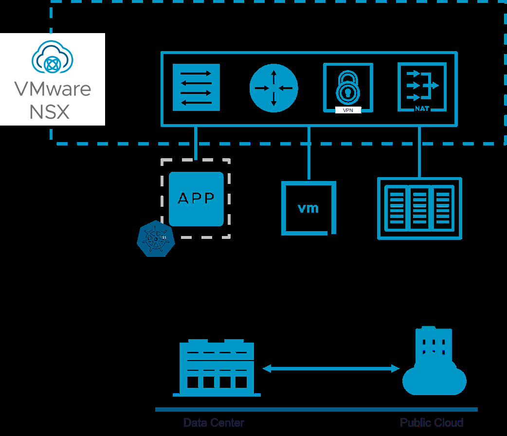
NSX Architecture Overview — Core Components
1.1 بِنية NSX — الطَّبَقات الثَّلاث | Three Planes
العَناصِر الرَّئيسيّة لِبِنية NSX هِيَ Management Plane وَControl Plane وَData Plane. هَذا الفَصل المِعماري يُتيح التَّوَسُّع بِدون التَّأثير عَلى أَحمال العَمَل.
🧠 الطَّبَقات الثَّلاث
- Management Plane: مُصَمَّم بِتِقنيّة clustering مُتَقَدِّمة لِمُعالَجة طَلَبات API مُتَزامِنة. يُوَفِّر
REST APIوَواجِهةWeb UI. يُنَفِّذ عَمَليّاتCRUD. - Control Plane: يُدير حِساب وَتَوزيع حالة الشَّبَكة وَالأَمان. يَشمَل
CCP(Central Control Plane) وَLCP(Local Control Plane). - Data Plane: يَشمَل مَجموعة
ESX HostsوَNSX Edge Nodes— تُسَمّىTransport Nodes. تُدير التَّوجيه المُوَزَّع لِحَرَكة الشَّبَكة.
| Plane | المَسؤوليّة | المُكَوِّنات | مِثال عَمَلي |
|---|---|---|---|
| Management | API, UI, Configuration | NSX Manager (Policy + Manager roles) | إِنشاء Segment جَديد عَبر UI |
| Control | State computation, Distribution | NSX Controller (CCP) + LCP per node | حِساب MAC/ARP tables وَتَوزيعها |
| Data | Packet forwarding | ESX Transport Nodes + NSX Edge Nodes | تَغليف Geneve + Distributed Routing |
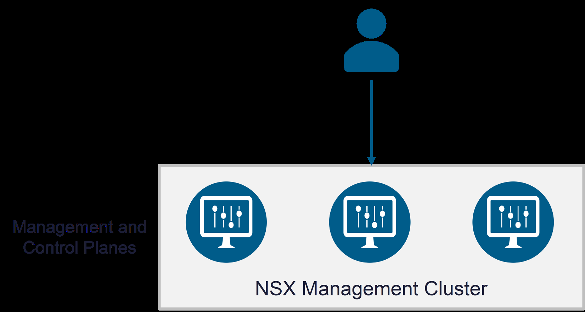
NSX Management Cluster — 3-Node Deployment
1.2 NSX Management Cluster — مَجموعة الإِدارة
تَتَكَوَّن مَجموعة الإِدارة مِن ثَلاثة NSX Manager Nodes لِلتَّوافُر العالي وَالتَّوَسُّع.
🧠 NSX Manager Appliance
- يَحتَوي عَلى أَدوار مُدمَجة:
Policy،Manager،Controller. - لا حاجة لِتَثبيت كُلّ دَور كَـ VM مُنفَصِل.
- قاعِدة بَيانات مُوَزَّعة (Distributed Persistent Database) تُوَفِّر نَفس العَرض لِكُلّ الـ nodes.
- أَحجام:
Small(lab) |Medium(≤128 hypervisors) |Large/XL(large-scale).
1.3 Virtual IP Address — عُنوان IP الاِفتِراضي
عِندَما يُنشَر NSX Management Cluster في وَضع التَّوافُر العالي:
🧠 VIP — كَيف يَعمَل
- كُلّ Manager Nodes عَلى نَفس
VLAN/Subnet. - يُنتَخَب node واحِد كَـ
Leader. Virtual IPيَتَّصِل بِالـ Leader.- لا يوجَد load balancing عَبر الـ Managers بِاستِخدام VIP.
- إِذا فَشَل الـ Leader → اِنتِخاب جَديد →
GARP→ VIP يَنتَقِل لِلـ Leader الجَديد.
1.4 NSX Policy وَ NSX Manager وَ NSX Controller
🧠 الأَدوار الثَّلاثة المُدمَجة
- NSX Policy: مَوقِع مَركَزي لِتَهيئة الشَّبَكات وَالأَمان. يُحَدِّد الحالة المَطلوبة (
Desired State) بِدون القَلَق بِشَأن الحالة الحاليّة. - NSX Manager: يُحَضِّر مُكَوِّنات Data Plane. يَستَلِم التَّهيئة مِن Policy. يَنشُرها لِلـ CCP. يَجمَع الإِحصائيّات.
- NSX Controller: يُحافِظ عَلى الحالة المُحَقَّقة (
Realized State). يُوَفِّر وَظائِف Control Plane لِلـ Overlay وَ Routing وَ Services.
Policy API vs Manager API
| الخاصّيّة | Policy API | Manager API |
|---|---|---|
| الغَرَض | Desired-state intent | Realized-state direct |
| URL Base | /policy/api/v1/ | /api/v1/ |
| الاِستِخدام | مُوصى — Day-2 operations | Advanced troubleshooting فَقَط |
| مِثال | أَنشِئ Segment بِاسم "Web-Tier" | اِقرَأ MAC table لِـ segment مُعَيَّن |
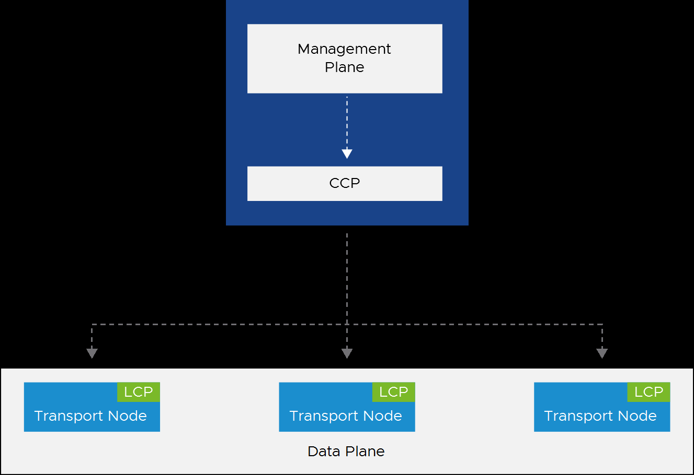
CCP and LCP — Information Flow from Management to Data Plane
1.5 Control Plane — CCP وَ LCP
في NSX، الـ Control Plane مُقَسَّم إِلى CCP (Central) وَLCP (Local).
🧠 CCP vs LCP
- CCP (Central Control Plane): جُزء مِن NSX Manager. يَحسِب Runtime State. يُوَزِّع المَعلومات عَبر LCP.
- LCP (Local Control Plane): مَوجود عَلى كُلّ Transport Node (Host أَو Edge). يُراقِب حالة الرَّوابِط المَحَلّيّة. يَدفَع التَّهيئات لِمُحَرِّكات التَّوجيه.
1.6 Data Plane — مُكَوِّنات البَيانات
الـ Data Plane يَشمَل عِدّة مُكَوِّنات وَوَظائِف:
🧠 Data Plane Components
- ESX Transport Nodes: تَعمَل كَمُستَوى تَوجيه لِحَرَكة VMs وَ Containers.
- NSX Edge Cluster: يَحتَوي عَلى Edge Transport Nodes. يُوَفِّر خَدَمات stateful وَ gateway services.
- يَستَخدِم نَموذج
Scale-out Distributed Forwarding. - يُطَبِّق
Overlay Networking،Distributed Routing، وَCentralized Routing.
1.7 Deep Dive Concept Cards — ما يَجِب أَن يَعرِفَه مُهَندِس NSX
هَذِه البِطاقات تُعَمِّق فَهمَك لِلمَفاهيم الأَساسيّة.
NSX Policy يَعمَل بِنَموذج «Desired State» — أَنت تُحَدِّد ما تُريد (مَثَلاً: «أُريد Segment بِاسم Web-Tier عَلى Overlay»)، وَNSX يَتَوَلّى التَّنفيذ. الحالة الفِعليّة المُطَبَّقة = Realized State.
- Policy API: المُستَخدِم يُرسِل Desired State عَبر UI أَو REST API.
- Manager: يَستَلِم الـ intent → يُتَرجِمه لِتَهيئة مُحَدَّدة.
- Controller: يَحسِب Runtime State → يُوَزِّعه عَلى Transport Nodes.
- LCP: عَلى كُلّ Transport Node، يُطَبِّق التَّهيئة عَلى VDS/N-VDS.
- Realized State: يُؤَكِّد أَنَّ ما طُلِب = ما طُبِّق.
- «Desired ≠ Realized دائِماً مُشكِلة» — أَحياناً يَكون تَأخير طَبيعي (propagation). تَحَقَّق بَعد 30 ثانية.
- «أَستَخدِم Manager API بَدَل Policy API» — Policy API هُوَ الموصى. Manager API لِلـ advanced cases فَقَط.
اِختِيار حَجم NSX Manager الخَطَأ = أَداء سَيِّئ أَو إِهدار مَوارِد. الحَجم يُؤَثِّر عَلى عَدَد الـ hypervisors المَدعومة وَعَدَد API calls/sec.
| الحَجم | vCPU | RAM | Disk | Max Hypervisors | الاِستِخدام |
|---|---|---|---|---|---|
| Small | 4 | 16 GB | 300 GB | Lab فَقَط | PoC, Testing |
| Medium | 6 | 24 GB | 300 GB | ≤ 128 | SMB Production |
| Large | 12 | 48 GB | 300 GB | 128+ | Enterprise |
| Extra Large | 16 | 64 GB | 300 GB | 1000+ | Service Provider |
بيئة VCF مَع 50 hosts: 3× Medium NSX Managers كافية. لَكِن إِذا كُنت تُخَطِّط لِلنُّمُوّ لِ 200 host → اِبدَأ بِ Large. تَغيير الحَجم لاحِقاً يَحتاج redeployment.
في الإِصدارات القَديمة، كانَ Manager وَ Controller وَ Policy أَجهِزة VM مُنفَصِلة. الآن كُلّها مُدمَجة في appliance واحِد. هَذا يُبَسِّط النَّشر وَيُقَلِّل الـ footprint.
- Fewer VMs 3 appliances بَدَل 9 (3 managers + 3 controllers + 3 policy).
- Simpler Ops upgrade واحِد بَدَل ثَلاثة.
- Shared DB قاعِدة بَيانات واحِدة مُوَزَّعة — لا sync issues.
❌ قَبل Convergence (NSX-V)
- 3 × NSX Manager VMs
- 3 × NSX Controller VMs
- 3 × Policy VMs (إِذا مُفَعَّل)
- = 9 VMs لِلإِدارة فَقَط
✅ بَعد Convergence (NSX 9.0)
- 3 × NSX Manager Appliances
- كُلّ appliance = Manager + Controller + Policy
- = 3 VMs فَقَط
- DB واحِدة مُوَزَّعة
1.8 Knowledge Check
Q1. What are the three main planes of the NSX architecture?
Correct: B
NSX architecture consists of Management, Control, and Data planes.
Q2. How many NSX Manager Nodes are recommended in a VCF production environment?
Correct: C
A 3-node NSX Management cluster is recommended for HA in production.
Q3. Which roles are converged in a single NSX Manager Appliance?
Correct: C
Each NSX Manager appliance has converged Manager, Controller, and Policy roles.
Q4. What happens when the NSX Manager Leader holding the VIP fails?
Correct: B
A new leader is elected and sends a GARP to claim the VIP.
Q5. Where does the Local Control Plane (LCP) run?
Correct: B
LCP runs on each transport node (host or edge) to monitor local link status and push configs.
Q6. Which NSX Manager size supports up to 128 hypervisors?
Correct: B
Medium appliance supports deployments up to 128 hypervisors.
Q7. Which API interface is recommended for day-to-day NSX operations?
Correct: B
Policy API is the recommended interface for day-2 operations. It uses the desired-state model. Manager API is for advanced troubleshooting only.
شَبَكات NSX Overlay | NSX Overlay Networking
شَبَكات NSX Overlay هِيَ التِّقنيّة الأَساسيّة الَّتي تُمَكِّن اِفتِراضيّة الشَّبَكات وَMicro-segmentation وَالتَّوفير السَّريع وَعَمَليّات مَراكِز البَيانات المَرِنة وَالقابِلة لِلتَّوَسُّع.
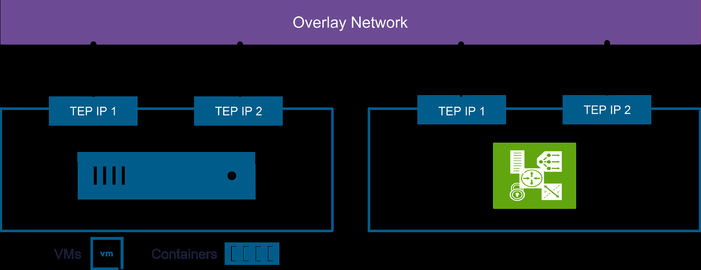
Transport Nodes with TEP IPs for Overlay Connectivity
2.1 Transport Nodes — عُقَد النَّقل
Transport Nodes هِيَ ESX Hosts وَ NSX Edge Nodes المُحَضَّرة لِـ NSX.
🧠 Transport Nodes
- كُلّ Transport Node مَسؤول عَن تَوجيه حَرَكة Data Plane.
- كُلّ Transport Node لَديه واحِد أَو أَكثَر مِن
TEPs(Tunnel Endpoints). - كُلّ TEP يَحتاج
IP Address— يُمكِن اِستِخدام IP Pool. VCFيُهَيِّئ ESX Hosts وَ Edge Nodes تِلقائيّاً بِ 2 TEP interfaces.
2.2 Transport Zones — مَناطِق النَّقل
Transport Zone تُحَدِّد نِطاق الشَّبَكة المَنطِقيّة عَلى البِنية التَّحتيّة الفِعليّة.
🧠 أَنواع Transport Zones
- Overlay TZ: لِلنَّفق الدّاخِلي بَين NSX Hosts وَ Edge Nodes. يَحمِل traffic مُغَلَّف بِـ
Geneve. - VLAN TZ: لِـ NSX Edge uplinks لِلاِتّصال Northbound. يَحمِل traffic مُعَلَّم بِـ
802.1Q. - Transport Node يُمكِن أَن يَنتَمي لِـ: overlay TZ واحِدة + عِدّة VLAN TZs.
| Transport Zone | النَّوع | الاِستِخدام | المُكَوِّنات |
|---|---|---|---|
| Overlay TZ | Geneve Encapsulation | VM-to-VM (East-West), Overlay Segments | ESX Hosts + Edge Nodes |
| VLAN TZ | 802.1Q Tagging | Edge Uplinks (North-South) | Edge Nodes فَقَط (uplink side) |
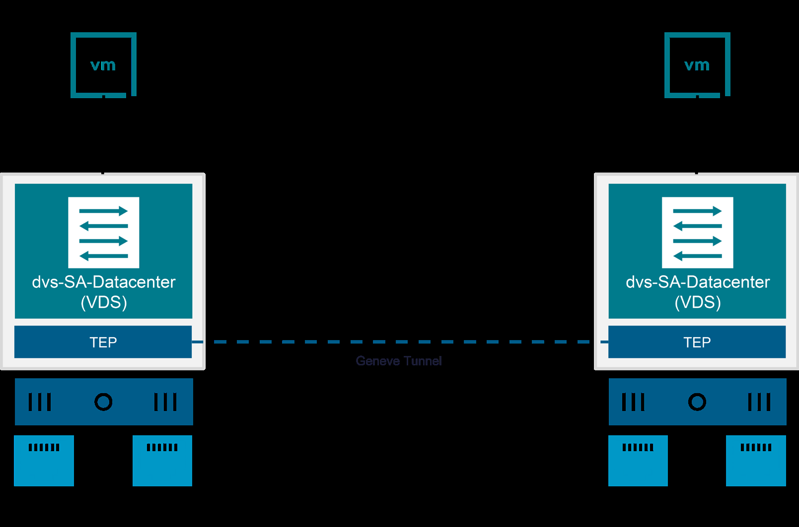
Geneve Tunnel Connectivity Between ESX Hosts via VDS
2.3 VDS وَ N-VDS — المُفتاحات الاِفتِراضيّة
🧠 Transport Node Switch Configuration
- ESX Transport Nodes: تَستَخدِم
VDS(vSphere Distributed Switch) فَقَط. - NSX Edge Nodes: تَستَخدِم
N-VDS— مُفتاح اِفتِراضي يُديرُه NSX Manager مَركَزيّاً. VDSيُمكِن أَن يَتَّصِل بِـ: overlay TZ واحِدة + عِدّة VLAN TZs.- كُلّ N-VDS أَو VDS يَحتاج NICs فِعليّة خاصّة بِه.
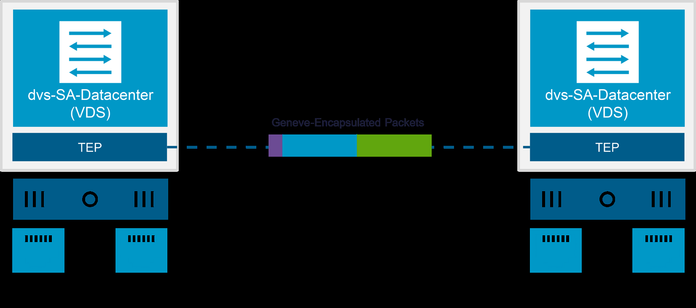
Geneve Packet Structure — Full Encapsulation
2.4 Tunneling وَ Geneve — النَّفق وَالتَّغليف
Tunneling يُغَلِّف بَيانات الشَّبَكة الاِفتِراضيّة وَيَنقُلها عَبر الشَّبَكة الفِعليّة. NSX يَستَخدِم Geneve لِتَغليف حَرَكة البَيانات.
🧠 Geneve Encapsulation
Geneve= بروتوكول تَغليف IETF يُوَفِّر L2 over L3.- يُرسَل عَبر
UDP port 6081. - أَكثَر مُرونة مِن VXLAN وَ NVGRE وَ STT.
- لا يُعَدِّل التَّطبيق أَو الـ VM.
- يَدعَم
IPv4وَIPv6. - يَدعَم
ECMProuting وَNIC hardware offload.
2.5 Overlay End-to-End Communication
VM-1 عَلى Host-A تَتَواصَل مَع VM-2 عَلى Host-B عَبر نَفس Overlay Network:
- VM-1 تُرسِل الـ traffic إِلى
VDS. - الـ Source Hypervisor يُغَلِّف الحُزمة بِـ
Geneve Header. - الـ Source Transport Node يُوَجِّه الحُزمة لِلشَّبَكة الفِعليّة.
- الـ Destination Transport Node يَستَلِم الحُزمة وَيُزيل الـ Geneve Header (
Decapsulation). - الـ Destination TEP يُوَجِّه الـ L2 frame لِلـ VM المَقصودة.
2.6 Deep Dive Concept Cards
كُلّ Transport Node لَديه TEP interfaces — هِيَ نِقاط الدُّخول وَالخُروج لِلـ Geneve Tunnel. تَصميم TEP الصَّحيح يُؤَثِّر مُباشَرة عَلى الأَداء وَالتَّوافُر.
- IP Pool: أَنشِئ IP Pool مُخَصَّص لِلـ TEPs — لا تَستَخدِم DHCP.
- VLAN: TEP traffic يَحتاج VLAN مُخَصَّص (مُنفَصِل عَن Management وَ vMotion).
- MTU: 1700 minimum. 9000 مُوصى (Jumbo Frames) — end-to-end.
- 2 TEPs per Node: VCF يُهَيِّئ 2 TEPs تِلقائيّاً — لِلـ load balancing وَ redundancy.
- «TEP VLAN = Management VLAN» — لا! يَجِب فَصلهما. خَلط الـ traffic يُسَبِّب bottleneck.
- «MTU 1500 كافٍ» — Geneve overhead ~50 bytes. MTU 1500 → fragmentation → أَداء سَيِّئ جِدّاً.
VXLAN كانَ المِعيار في NSX-V. Geneve حَلَّ مَكانه في NSX-T/NSX 9.0.
| الخاصّيّة | VXLAN | Geneve |
|---|---|---|
| UDP Port | 4789 | 6081 |
| Header | ثابِت (8 bytes) | مَرِن (8+ bytes مَع TLV options) |
| Metadata | VNI فَقَط | VNI + Security Tags + Service Chaining |
| Hardware Offload | مَحدود | كامِل (NIC offload support) |
| الحالة | Legacy (NSX-V) | الحالي (NSX-T / NSX 9.0) |
NSX Overlay يَعمَل فَوق الشَّبَكة الفِعليّة. لَكِن تَصميم الـ Underlay يُؤَثِّر مُباشَرة عَلى أَداء الـ Overlay.
- Spine-Leaf Topology: 2 Spine + N Leaf switches. كُلّ host مُتَّصِل بِ 2 Leaf switches.
- L3 Fabric: كُلّ Leaf switch = L3 boundary. BGP/OSPF بَين Spine وَ Leaf.
- MTU 9000: مِن NIC → vSwitch → Physical Switch → كُلّ hop.
- ECMP: مَسارات مُتَساوِية التَّكلُفة لِتَوزيع الـ traffic بَين Spine switches.
- لا STP: Spine-Leaf مَع L3 يُلغي الحاجة لِـ Spanning Tree.
8 hosts ESX × 2 NICs = 16 connections. 2 Leaf switches (8 ports each). 2 Spine switches. كُلّ host يَرى كُلّ host آخَر عَبر 2 ECMP paths maximum. Latency < 1ms intra-fabric.
2.7 Knowledge Check
Q1. Which encapsulation protocol does NSX use for overlay traffic?
Correct: B
NSX uses Geneve for overlay encapsulation (UDP port 6081).
Q2. Which type of virtual switch do ESX Transport Nodes use?
Correct: B
ESX transport nodes use VDS (vSphere Distributed Switch). N-VDS is used by Edge nodes.
Q3. On which UDP port does Geneve operate?
Correct: C
Geneve uses UDP port 6081.
Q4. How many TEP interfaces does VCF automatically configure per Transport Node?
Correct: B
VCF automatically configures 2 TEP interfaces per transport node.
Q5. Which Transport Zone is used for NSX Edge uplinks?
Correct: B
VLAN transport zones are used at NSX Edge uplinks for northbound connectivity.
Q6. What is the minimum MTU required for Geneve?
Correct: C
Minimum MTU for Geneve is 1700 bytes. 9000 (Jumbo Frames) is recommended.
السَّحابات الخاصّة الاِفتِراضيّة | Virtual Private Clouds
VPCs حَرِجة لِلمُؤَسَّسات الَّتي تَسعى لِتَحديث بِنيتها التَّحتيّة وَتَبَنّي نَموذج تَشغيل سَحابي مَع الحِفاظ عَلى الأَمان وَالحَوكَمة. تَعَلَّم كَيف تَبني بيئة مُتَعَدِّدة المُستَأجِرين بِشَكل صَحيح.
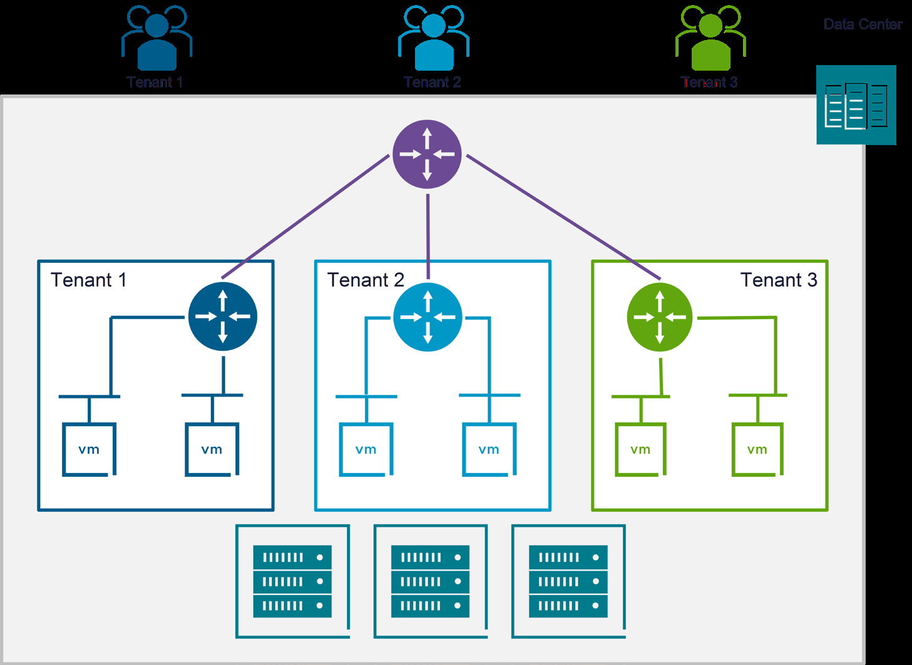
NSX Multitenancy Model — Tenant Isolation on Shared Infrastructure
3.1 NSX Multitenancy — تَعَدُّد المُستَأجِرين
Multitenancy يُمَكِّنك مِن تَهيئة عِدّة مُستَأجِرين عَلى نَشر NSX واحِد:
🧠 Multitenancy
- المُستَأجِرون يُمكِنهم الوُصول لِنَفس
NSX Managerلِتَوفير كائِنات الشَّبَكات عَلى hosts مُشتَرَكة. - يَسمَح بِعَزل تَهيئات الأَمان وَالشَّبَكات بَين المُستَأجِرين.
3.2 NSX Multitenancy Hierarchy
🧠 الهَرَميّة
- Default Space: يُنشَأ تِلقائيّاً مِن النِّظام.
- NSX Projects: حاوِيات عَزل لِبِنيات الشَّبَكات. يُنشِئ النِّظام Project اِفتِراضي + يُمكِن إِنشاء المَزيد.
- NSX VPCs: شَبَكات خاصّة مُحتَواة ذاتيّاً داخِل Project. تُجَرِّد مَوارِد البِنية التَّحتيّة.
3.3 NSX Projects — المَشاريع
🧠 NSX Projects
- تُمَكِّن مِن تَقسيم نَشر NSX واحِد إِلى عِدّة مُستَأجِرين.
- كُلّ Project يَحتَوي عَلى واحِد أَو أَكثَر مِن VPCs.
- النِّظام يُنشِئ
Transit Gatewayلِكُلّ Project لِلاِتّصال الدّاخِلي بَين VPCs. - الـ Transit Gateway يُوَفِّر أَيضاً اِتّصال خارِجي (north-facing) لِلـ VPCs.
- كُلّ Project لَه تَهيئات وَتَنبيهات خاصّة بِه.
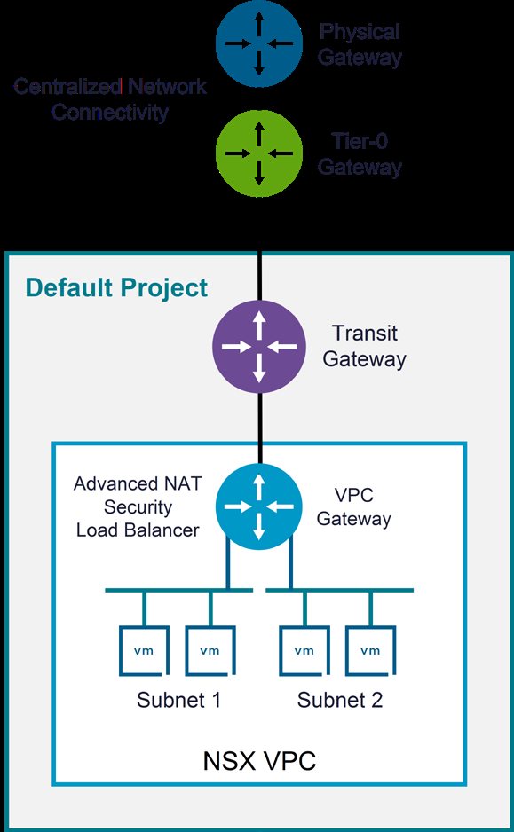
VPC Architecture — Physical GW → Transit GW → VPC GW → Subnets
3.4 NSX Virtual Private Clouds
NSX VPC = شَبَكة خاصّة مُحتَواة ذاتيّاً داخِل NSX Project:
🧠 عَناصِر VPC
- VPC Gateway: يُنشَأ تِلقائيّاً مَع كُلّ VPC جَديد. مُتَّصِل بِالـ Transit Gateway.
- Subnets: واحِد أَو أَكثَر — يَتَّصِل بِها الـ workloads.
- Networking Services: NAT، Gateway Firewall، Load Balancer.
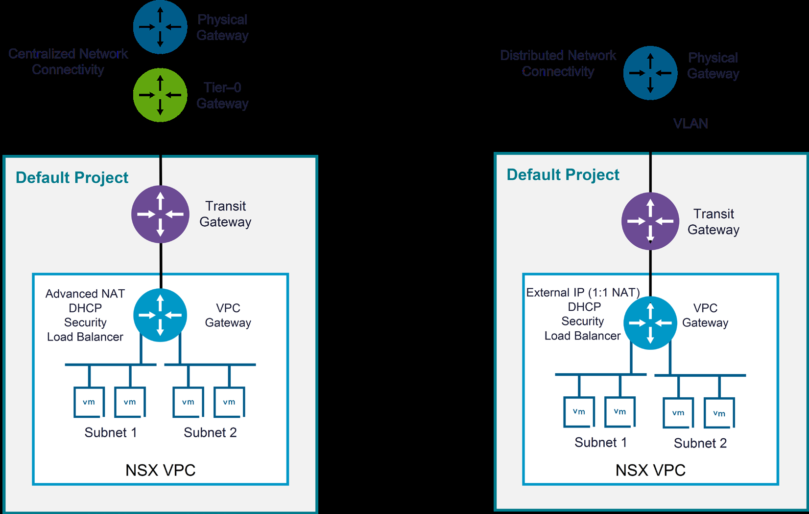
Centralized vs Distributed VPC Connectivity Comparison
3.5 External Connectivity Types
Centralized Connectivity
- يَحتاج
NSX Edge Cluster+Tier-0 Gateway - يَدعَم: External IPs (1:1 NAT)، Outbound NAT (N:1)، Advanced NAT، Port NAT
- يَدعَم: DHCP، Security، Load Balancer
- BGP أَو Static Routing مَع Physical Fabric
Distributed Connectivity
- بِدون Edge Cluster — أَبسَط
- يَدعَم: External IPs (1:1 NAT)، DHCP، Security، LB
- لا يَدعَم: Outbound NAT، Advanced NAT
- يَحتاج VLAN + Subnet لِرَبط Transit GW بِ ToR Switch
3.6 VPC Subnet Types
🧠 ثَلاثة أَنواع Subnets
- Public Subnet: قابِلة لِلوُصول مِن الشَّبَكة الخارِجيّة. لا تَحتاج NAT.
- Private-Transit Gateway Subnet: قابِلة لِلوُصول عَبر VPCs المُتَّصِلة بِالـ Transit GW. تَحتاج NAT لِلاِتّصال الخارِجي.
- Private-VPC Subnet: قابِلة لِلوُصول مِن داخِل الـ VPC فَقَط. تَحتاج NAT لِأَيّ اِتّصال خارِجي.
| Subnet Type | External Access | Inter-VPC Access | NAT Required | الاِستِخدام |
|---|---|---|---|---|
| Public | ✅ مُباشِر | ✅ مُباشِر | ❌ | Web Servers, APIs |
| Private-TGW | عَبر NAT | ✅ مُباشِر | External فَقَط | App Tier |
| Private-VPC | عَبر NAT | عَبر NAT | ✅ دائِماً | Database Tier |
3.7 Deep Dive Concept Cards
فَهم الهَرَميّة الكامِلة (Default Space → Projects → VPCs → Subnets) ضَروري لِتَصميم بيئة مُتَعَدِّدة المُستَأجِرين.
- Default Space: الحاوِية الأَعلى — يُنشِئها NSX تِلقائيّاً. تَحتَوي عَلى كُلّ شَيء.
- NSX Project: عَزل مَنطِقي. كُلّ project = مُستَأجِر. لَه Transit Gateway خاصّ.
- NSX VPC: شَبَكة خاصّة داخِل project. لَها VPC Gateway تِلقائي.
- Subnet: شَبَكة فَرعيّة يَتَّصِل بِها الـ workloads. 3 أَنواع.
- «Project = VPC» — لا! Project يَحتَوي عَلى عِدّة VPCs.
- «أَحتاج Edge لِكُلّ VPC» — لا! فَقَط Centralized يَحتاج Edge Cluster.
Web Tier: Public — users access directly.
App Tier: Private-TGW — communicates with DB in another VPC.
DB Tier: Private-VPC — maximum isolation, NAT for any external access.
3.8 Knowledge Check
Q1. What is the correct NSX Multitenancy hierarchy?
Correct: B
Default Space → Projects → VPCs → Subnets.
Q2. Which VPC Connectivity Type requires an NSX Edge Cluster?
Correct: B
Centralized connectivity requires Edge Cluster + Tier-0 gateway.
Q3. What does NSX automatically create for each Project?
Correct: B
NSX creates a Transit Gateway for each project for inter-VPC communication.
Q4. Which subnet type is only reachable from inside the VPC?
Correct: C
Private-VPC subnets are only reachable from inside the VPC.
Q5. Which Connectivity Type does NOT support Outbound NAT (N:1)?
Correct: B
Distributed connectivity does not support Outbound NAT (N:1) or Advanced NAT.
التَّوجيه المَنطِقي في NSX | NSX Logical Routing
فَهم التَّوجيه المَنطِقي — طَبيعته المُوَزَّعة لِحَرَكة East-West، وَالبِنية مُتَعَدِّدة الطَّبَقات لِاِتّصال North-South. هُنا حَيث يَلتَقي الـ Overlay بِالعالَم الخارِجي.
4.1 Tier-0 Gateways — البَوّابات مِن المُستَوى الصِّفر
Tier-0 Gateways تُوَفِّر اِتّصال North-South في بيئات Centralized Network Connectivity.
🧠 خَصائِص Tier-0
- تَدعَم
Static RoutingأَوDynamic Routing (BGP). - تَدعَم
ECMP(Equal-Cost Multipath) لِلـ upstream physical gateways. - تُوَجِّه الـ traffic بَين الشَّبَكات المَنطِقيّة وَالفِعليّة (North-South).
- تَحتاج
NSX Edge Cluster.
4.2 Tier-0 HA Modes — أَوضاع التَّوافُر العالي
Active-Active
- كُلّ Edge Nodes فَعّالة مُتَزامِنة
- الـ workload يُوَزَّع بَين كُلّ الـ nodes
- عِند فَشَل node → bandwidth يَتَقَلَّص لَكِن لا اِنقِطاع
- Stateless — لا NAT، لا Stateful Firewall
- فَقَط Routing + Reflexive NAT
Active-Standby
- node واحِد فَعّال + node اِحتِياطي
- الاِحتِياطي يَتَوَلّى عِند فَشَل الفَعّال
- Stateful — يَدعَم NAT، Stateful Firewall، VPN
- مَطلوب لِـ VCF Automation وَ vSphere Supervisor
- مَطلوب لِـ IPSec VPN وَ L2 VPN
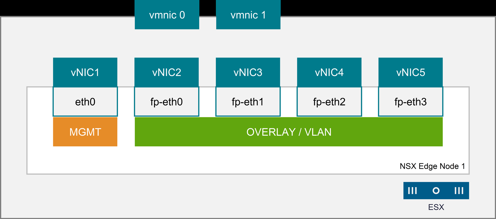
NSX Edge Node Interfaces — 5 NICs (eth0 Management + 4 fp-ethX Datapath)
4.3 NSX Edge Node — عُقدة الحافّة
🧠 NSX Edge Node
- يُوَفِّر اِتّصال بِالشَّبَكات الخارِجيّة.
- مَطلوب لِاستِضافة
Tier-0 Gateways. - يُشَغِّل Dynamic Routing وَخَدَمات مِثل
DHCP،NAT،VPN. - يُنشِئ
Geneve Tunnelsلِلـ Overlay Networks. - يَدعَم
DPDKلِتَسريع توجيه الحُزَم. - كُلّ Edge Node يَستَضيف Tier-0 Gateway واحِد فَقَط.
- 5 واجِهات:
eth0(Management) +fp-eth0 → fp-eth3(4 datapath).
4.4 NSX Edge Cluster
🧠 Edge Cluster
- مُكَوَّنة مِن مَجموعة Edge Nodes (حَتّى 10 nodes).
- تُوَفِّر Scale-out وَ HA.
VCFيُؤَتمِت نَشر Edge VMs عِند تَهيئة Centralized Connectivity.
4.5 N-VDS في VCF — تَهيئة Edge
🧠 Edge N-VDS in VCF
N-VDSواحِد في كُلّ VM Edge Node.- يَحمِل Overlay وَ VLAN uplink traffic مَعاً.
- 2 TEPs لِتَوفير load balancing لِلـ overlay traffic.
- Management interface مُتَّصِلة بِـ Distributed Port Group.
- يَجِب إِنشاء Distributed Port Group لِشَبَكة Edge Management قَبل نَشر Edge Cluster.
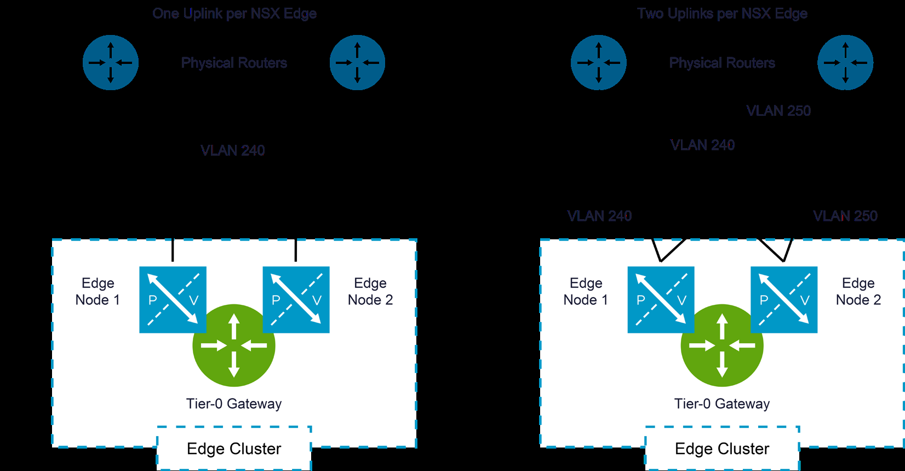
Dynamic Routing — BGP Between Tier-0 and Physical Routers
4.6 Routing — Static vs Dynamic (BGP)
Static Routing
- تَهيئة يَدَويّة — مُتَحَكَّم لَكِن لا يَتَوَسَّع
- لا يُمكِن تَغيير الـ routes ديناميكيّاً
- يَجِب تَصميم كُلّ failure scenarios يَدَويّاً
- Route redundancy يَدَوي
Dynamic Routing (BGP) — المُوصى
VCFيَستَخدِمBGPاِفتِراضيّاً- Gateways تَتَبادَل مَعلومات الشَّبَكة تِلقائيّاً
- عِند تَغيير الشَّبَكة → Routers تُبَلِّغ فَوراً
- VCF يُؤَتمِت: Edge Uplink Profiles + Segments + BGP Peering
4.7 BGP Uplink Connections
🧠 BGP Topology
- Tier-0 BGP topology بِ Redundancy وَ Symmetry.
- Tier-0 يُمكِن أَن يَملِك 1 أَو 2 uplinks per Edge Node.
- 1 uplink: mapped لِ VLAN واحِد.
- 2 uplinks: mapped لِ VLANs مُختَلِفة (redundancy أَفضَل).
4.8 Deep Dive Concept Cards
- هَل تَحتاج NAT؟ → Active-Standby (إِلزامي).
- هَل تَحتاج IPSec VPN أَو L2 VPN؟ → Active-Standby (إِلزامي).
- هَل تَنشُر VCF Automation؟ → Active-Standby (إِلزامي).
- هَل تَنشُر vSphere Supervisor؟ → Active-Standby (إِلزامي).
- كُلّ ما سَبَق = لا؟ → يُمكِن Active-Active (أَفضَل bandwidth).
«أَختار Active-Active ثُمَّ أُضيف NAT لاحِقاً» — لا يُمكِن! تَغيير HA mode يَحتاج إِعادة نَشر. اِبدَأ بِ Active-Standby إِذا كُنت غَير مُتَأَكِّد.
| السِّيناريو | العَدَد | HA Mode | المَوارِد لِكُلّ Node |
|---|---|---|---|
| Minimum HA | 2 | Active-Standby | ~8 vCPU + 32GB RAM (Large) |
| Active-Active routing | 2-4 | Active-Active | ~8 vCPU + 32GB RAM |
| Maximum per cluster | 10 | أَيّ mode | - |
2 Workload Domains: Management + VI WLD. كُلّ domain يَحتاج Edge Cluster × 2 nodes = 4 Edge VMs. يُمكِن مُشارَكة Edge Cluster لِلـ Management domain.
- ASN Planning: Private ASN (64512-65534). NSX Tier-0 يَحتاج ASN خاصّ.
- Dual Uplinks: 2 uplinks per Edge Node عَلى VLANs مُختَلِفة → redundancy.
- BFD: فَعِّل Bidirectional Forwarding Detection (اِكتِشاف أَعطال < 1 sec).
- Route Filtering: اِستَخدِم Route Maps وَ Prefix Lists.
- Graceful Restart: فَعِّله لِتَقليل تَأثير NSX upgrades.
4.9 Knowledge Check
Q1. Which Tier-0 HA mode is required for NAT?
Correct: B
Active-Standby is required for stateful services like NAT, VPN.
Q2. What is the maximum number of Edge Nodes per Edge Cluster?
Correct: D
An Edge Cluster supports up to 10 edge nodes.
Q3. What is the default dynamic routing protocol in VCF?
Correct: C
VCF uses BGP as the default dynamic routing protocol.
Q4. How many network interfaces does each NSX Edge Node have?
Correct: D
Each Edge node has 5 interfaces: 1 management (eth0) + 4 datapath (fp-ethX).
Q5. How many Tier-0 Gateways can a single Edge Node host?
Correct: A
An NSX Edge node can only host one Tier-0 gateway.
Q6. What does VCF automate when deploying an Edge Cluster with BGP?
Correct: A
VCF automates Edge uplink profiles, uplink segments, and BGP peering configuration.
خَدَمات شَبَكات NSX | NSX Networking Services
التَّوجيه يُوَفِّر المَسارات — لَكِن الخَدَمات (NAT، DHCP، DNS، Load Balancing، VPN) هِيَ الَّتي تَجعَل الشَّبَكة قابِلة لِلاستِخدام الحَقيقي.
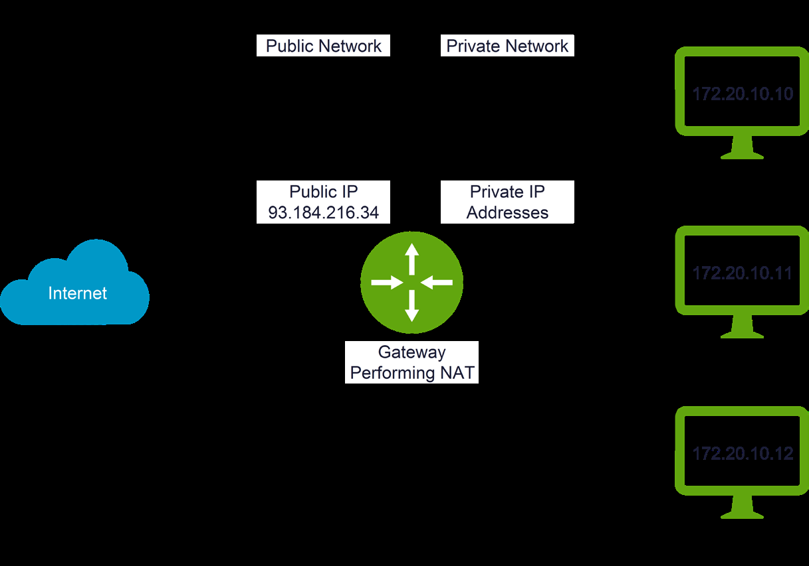
NAT — Address Translation Between Public and Private Networks
5.1 NAT — تَرجَمة عَناوين الشَّبَكة
🧠 أَنواع NAT
- Source NAT (SNAT): يُتَرجِم عُنوان المَصدَر لِلحُزَم الصّادِرة.
- Destination NAT (DNAT): يُتيح الوُصول لِعَناوين خاصّة مِن الخارِج.
- Reflexive NAT: Stateless ACLs في كِلا الاِتّجاهَين — لِ Active-Active Tier-0.
5.2 DHCP وَ DHCP Relay
🧠 DHCP
- العَمَليّة:
Discover → Offer → Request → Acknowledge. - يَعتَمِد عَلى Broadcast traffic.
🧠 DHCP Relay
- يُحَوِّل DHCP Broadcast → Unicast → لِلـ DHCP Server البَعيد.
- مُتاح فَقَط لِـ Public VPC Subnets.
5.3 DHCP في NSX — تَهيئات VPC Subnet
| الخِيار | الوَصف | الاِستِخدام |
|---|---|---|
| None | DHCP مُعَطَّل — كُلّ IPs يَدَويّة | أَجهِزة ثابِتة (Servers) |
| DHCP Server | خادِم DHCP يُعَيِّن IPs تِلقائيّاً | VMs عامّة |
| DHCP Relay | يُوَجِّه لِخادِم DHCP خارِجي | Public Subnets فَقَط |
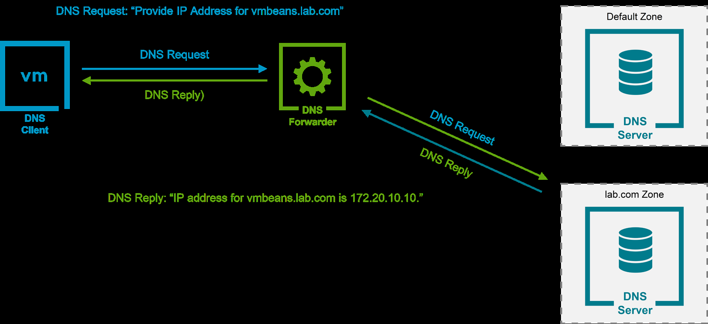
DNS Forwarder — Zone-Based DNS Request Routing
5.4 DNS Services وَ DNS Forwarder
🧠 DNS Forwarder
- يُهَيَّأ في
Tier-0 Gateways. - يُوَجِّه طَلَبات DNS لِلخَوادِم الخارِجيّة (Upstream DNS Servers).
- يُمكِن تَوجيه طَلَبات DNS لِ
FQDN Zonesمُحَدَّدة. - يُخَزِّن الرُّدود المُستَلَمة (Caching).
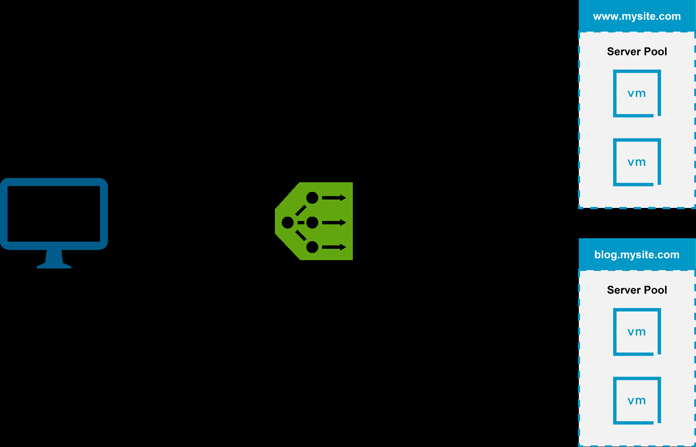
Layer 7 Load Balancer — Content-Based Routing to Server Pools
5.5 Load Balancing — مُوازَنة الحِمل
🧠 NSX Load Balancer
- VCF 9.0 Supported Use Cases:
- 1. LB لِمُكَوِّنات VCF infrastructure.
- 2. Layer 4 LB لِـ vSphere Supervisor.
- 3. Layer 7 LB مَحدود لِخَدَمات vSphere Supervisor.
- لِتَطبيقات Workload Domains →
Avi Load Balancer(مُوصى).
5.6 Layer 4 vs Layer 7 Load Balancing
Layer 4 (Transport Layer)
- Connection-based (TCP/UDP)
- لا يَفحَص مُحتَوى الحُزَم
- يُوَزِّع بِناءً عَلى: اِتّصالات + أَوقات الاِستِجابة
- مَطلوب لِ VCF Operations + Automation HA
Layer 7 (Application Layer)
- Content-based (HTTP/HTTPS)
- يَفحَص مُحتَوى الحُزَم
- يُمَيِّز client sessions → يُوَجِّه لِنَفس server
- يَدعَم URL manipulation
5.7 Load Balancer Architecture
🧠 المُكَوِّنات
- يَجِب رَبطه بِـ
Tier-1 Gateway(لَيسَ Tier-0!). Tier-1يَجِب أَن يَعمَل عَلى Edge Cluster فيActive-Standby.- Virtual Server: IP + Port + Protocol.
- Profiles: Application + Persistence.
- Server Pools: مَجموعة servers. Static أَو Dynamic membership.
- Monitors: Active (يَختَبِر التَّوافُر) + Passive (يُراقِب الأَعطال).
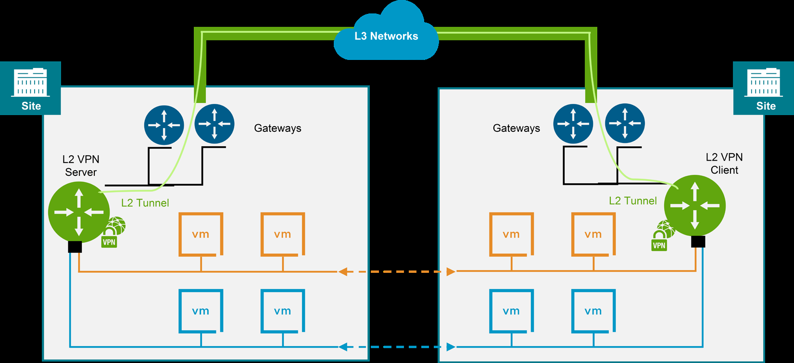
IPSec VPN — Secure Site-to-Site Connectivity
5.8 IPSec VPN
🧠 IPSec VPN
- نَقل آمِن بَين مَواقِع عَبر شَبَكات عامّة.
- Routing-based بَين subnets غَير مُتَداخِلة.
- NSX Edge يَدعَم
Site-to-Site IPSec VPN. - Tier-0 Active-Standby إِلزامي.
5.9 Layer 2 VPN
🧠 L2 VPN
- يُمَدِّد شَبَكات L2 عَبر مَواقِع عَلى نَفس Broadcast Domain.
- يُمَكِّن: vMotion بِدون تَغيير IP، Disaster Recovery.
- البِنية:
L2 VPN Server+L2 VPN Client. - Tier-0 Active-Standby إِلزامي.
5.10 Deep Dive Concept Cards
- Tier-0 Gateway: BGP/Static routing لِلخارِج. Edge Cluster.
- Tier-1 Gateway: يُنشَأ يَدَويّاً. يَتَّصِل بِ Tier-0.
- Load Balancer: يُرفَق بِ Tier-1. Active-Standby إِلزامي.
- Virtual Servers: العُمَلاء يَتَّصِلون بِالـ VIP.
- «LB عَلى Tier-0 مُباشَرة» — لا يُمكِن! يَجِب Tier-1.
- «Tier-1 Active-Active كافٍ» — لا! LB يَحتاج Active-Standby.
| الخاصّيّة | IPSec VPN | L2 VPN |
|---|---|---|
| الغَرَض | رَبط subnets مُختَلِفة (L3) | تَمديد نَفس subnet (L2) |
| Use Case | Site-to-Site connectivity | vMotion + DR |
| Tier-0 Mode | Active-Standby | Active-Standby |
| Broadcast | لا (L3 routing) | نَعَم (same domain) |
| LB Type | الاِستِخدام | القُدرات |
|---|---|---|
| NSX Native | VCF infrastructure (Operations HA, Automation HA, Supervisor) | L4 + Limited L7 |
| Avi LB | Workload Domain applications | Full L4-L7, WAF, Analytics, Advanced Health Checks |
القاعِدة: إِذا لَيسَت مُكَوِّنات VCF → اِستَخدِم Avi.
5.11 Knowledge Check
Q1. Which NAT type is stateless?
Correct: C
Reflexive NAT rules are stateless ACLs defined in both directions.
Q2. To which gateway must the Load Balancer be attached?
Correct: B
Load balancer must be attached to a Tier-1 gateway running on Edge Cluster Active-Standby.
Q3. DHCP Relay is only available for which VPC Subnet type?
Correct: C
DHCP Relay is only available for workloads on public VPC subnets.
Q4. What is required to configure IPSec VPN in NSX?
Correct: B
IPSec VPN requires Tier-0 in Active-Standby mode, configured from NSX UI.
Q5. Which Load Balancer is recommended for Workload Domain apps in VCF 9.0?
Correct: B
Avi Load Balancer is recommended for workload domain applications.
Q6. What is the primary function of L2 VPN?
Correct: B
L2 VPN extends L2 networks across sites on the same broadcast domain.
أَمان NSX — الجِدار النّاري المُوَزَّع وَالتَّجزِئة الدَّقيقة
الشَّبَكات التَّقليديّة تَعتَمِد عَلى Perimeter Firewall فَقَط — لَكِن 80% مِن الـ traffic هُوَ East-West (داخِل مَركَز البَيانات). NSX يُغَيِّر قَواعِد اللُّعبة بِـ Distributed Firewall المَبني في كُلّ hypervisor.
6.1 لِماذا الأَمان المُوَزَّع؟ | Why Distributed Security
❌ Traditional Perimeter Security
- Firewall عِند الحافّة فَقَط (North-South)
- East-West traffic = blind spot
- Lateral movement بَعد الاِختِراق سَهل
- Flat network = compromise one → compromise all
✅ NSX Zero-Trust Security
- DFW عَلى كُلّ hypervisor (East-West + North-South)
- كُلّ VM لَها firewall rules خاصّة
- Micro-segmentation → blast radius مَحدود
- Default deny — فَقَط الـ traffic المَسموح يَمُرّ
6.2 Distributed Firewall (DFW) — الجِدار النّاري المُوَزَّع
🧠 DFW — الأَساسيّات
- يَعمَل في
kernelعَلى كُلّ ESX Host — بِدون VM مُنفَصِلة. - يَفحَص كُلّ packet يَدخُل أَو يَخرُج مِن vNIC الخاصّ بِالـ VM.
- يَعمَل بَعد الـ VDS port وَقَبل أَن يُغادِر الـ packet الـ host.
- أَداء عالٍ — لا bottleneck لِأَنَّه مُوَزَّع عَلى كُلّ host.
- يَدعَم:
L2(MAC-based)،L3(IP-based)،L4(Port-based)،L7(App ID). - يَدعَم
Stateful Inspection— يَتَتَبَّع حالة الاِتّصال.
6.3 Gateway Firewall (GFW) — جِدار البَوّابة
🧠 Gateway Firewall
- يَعمَل عَلى
Tier-0وَTier-1 Gateways(عَلى Edge Nodes). - يَفحَص الـ North-South traffic (دُخول/خُروج مِن الشَّبَكة الاِفتِراضيّة).
- يَدعَم Stateful rules + URL Filtering + TLS Inspection (مَع vDefend).
- يُكَمِّل الـ DFW — لَيسَ بَديلاً.
| الخاصّيّة | Distributed Firewall (DFW) | Gateway Firewall (GFW) |
|---|---|---|
| المَكان | كُلّ ESX Host (kernel) | Tier-0/Tier-1 (Edge Nodes) |
| الـ Traffic | East-West + intra-host | North-South |
| الأَداء | مُوَزَّع — يَتَوَسَّع مَع الـ hosts | مَركَزي — مَحدود بِعَدَد Edge Nodes |
| الاِستِخدام | Micro-segmentation | Perimeter protection |
6.4 Micro-segmentation — التَّجزِئة الدَّقيقة
Micro-segmentation = تَطبيق firewall rules عَلى مُستَوى الـ VM الفَردي — بَدَل subnet أَو VLAN. كُلّ VM لَها policy خاصّة بِناءً عَلى الـ role، التَّطبيق، البيئة، أَو أَيّ metadata.
- تَحديد الـ Groups: صَنِّف VMs حَسَب: Name، Tag، OS، Segment، أَو Membership criteria.
- تَعريف الـ Policies: أَنشِئ DFW Section لِكُلّ تَطبيق أَو بيئة.
- كِتابة الـ Rules: Source Group → Destination Group → Service (Port/Protocol) → Action (Allow/Drop/Reject).
- Default Rule: اِجعَل الـ default rule =
Drop— فَقَط الـ traffic المُصَرَّح بِه يَمُرّ (Zero-Trust). - المُراقَبة: اِستَخدِم
Flow Monitoringلِمُراقَبة الـ traffic وَاكتِشاف الاِنتِهاكات.
6.5 NSX Security Groups وَ Tags
🧠 Security Groups
- Static Membership: أَضِف VMs يَدَويّاً لِلـ Group.
- Dynamic Membership: VMs تَنضَمّ تِلقائيّاً بِناءً عَلى criteria (Name pattern, Tag, OS type).
- NSX Tags: key-value pairs تُرفَق بِالـ VM. مَثَلاً:
env=prod,tier=web,app=crm. - القُوّة: Tags + Dynamic Groups = firewall rules تَتَكَيَّف تِلقائيّاً مَع تَغَيُّر البيئة.
6.6 vDefend — الحِماية المُتَقَدِّمة
🧠 vDefend (سابِقاً NSX Advanced Threat Prevention)
- IDS/IPS: اِكتِشاف وَمَنع التَّهديدات المَعروفة (signature-based).
- NTA (Network Traffic Analysis): اِكتِشاف سُلوك غَير طَبيعي (behavioral).
- Malware Prevention: فَحص الملَفّات المُنتَقِلة عَبر الشَّبَكة.
- NDR (Network Detection & Response): رَبط الأَحداث لِاكتِشاف هَجَمات مُعَقَّدة.
- تَرخيص مُنفَصِل — لَيسَ جُزء مِن NSX الأَساسي.
6.7 DFW Rule Processing Order
🧠 تَرتيب مُعالَجة القَواعِد
- 1. Emergency Rules: أَعلى أَولَويّة — لِحالات الطَّوارِئ (block compromised VM).
- 2. Infrastructure Rules: لِحِماية البِنية التَّحتيّة (NSX Managers, vCenter, ESX Management).
- 3. Environment Rules: عَزل بَين البيئات (Prod vs Dev vs Staging).
- 4. Application Rules: القَواعِد الخاصّة بِالتَّطبيقات (Web → App → DB).
- 5. Default Rule: آخِر rule — يَجِب أَن يَكون
Drop(Zero-Trust).
6.8 Knowledge Check
Q1. Where does the Distributed Firewall (DFW) run?
Correct: B
DFW runs in the kernel of each ESX host, inspecting all traffic at the vNIC level.
Q2. What is the recommended default DFW rule action in a Zero-Trust model?
Correct: C
In Zero-Trust, the default rule should be Drop — only explicitly allowed traffic passes.
Q3. Which firewall type handles North-South traffic at the gateway level?
Correct: B
Gateway Firewall runs on Tier-0/Tier-1 Gateways and handles North-South traffic.
Q4. How do NSX Tags enable dynamic security groups?
Correct: B
NSX Tags are key-value pairs attached to VMs. Dynamic groups use tag-based criteria — VMs matching the criteria auto-join and firewall rules apply immediately.
Q5. Which DFW rule category has the highest priority?
Correct: C
Emergency rules have the highest priority, processed before all other categories.
Q6. Which component provides IDS/IPS and Malware Prevention in NSX?
Correct: C
vDefend (formerly NSX Advanced Threat Prevention) provides IDS/IPS, NTA, and Malware Prevention. It requires a separate license.
شَرائِح NSX وَمَلَفّات التَّعريف | NSX Segments & Profiles
NSX Segments هِيَ الشَّبَكات المَنطِقيّة الَّتي تَتَّصِل بِها VMs. Segment Profiles تُتَحَكَّم في سُلوك الـ Segment (QoS, IP Discovery, MAC Discovery, SpoofGuard). فَهمهما = فَهم Day-2 operations.
7.1 NSX Segments — الأَنواع
🧠 أَنواع Segments
- Overlay Segment: يَعمَل عَلى Overlay Transport Zone. Geneve encapsulation. مُستَقِلّ عَن Physical VLANs.
- VLAN Segment: يَعمَل عَلى VLAN Transport Zone. يُعَيَّن VLAN ID. لِـ Edge uplinks وَ external connectivity.
- VPC Subnet: نَوع خاصّ يُنشَأ داخِل VPC (Public / Private-TGW / Private-VPC).
| النَّوع | Transport Zone | الاِستِخدام | الـ Gateway |
|---|---|---|---|
| Overlay | Overlay TZ | VM workloads (East-West) | Tier-0/Tier-1 |
| VLAN | VLAN TZ | Edge uplinks, External | Physical Router |
| VPC Subnet | (VPC-managed) | VPC workloads | VPC Gateway |
7.2 Segment Profiles — مَلَفّات التَّعريف
🧠 Segment Profile Types
- QoS Profile: يُتَحَكَّم في bandwidth (ingress/egress rate limiting) وَ CoS/DSCP marking.
- IP Discovery Profile: يَكتَشِف IP addresses لِلـ VMs (ARP Snooping, ND Snooping, DHCP Snooping).
- MAC Discovery Profile: يَكتَشِف MAC addresses (MAC Learning, MAC Limit, Unknown Unicast flooding).
- SpoofGuard Profile: يَمنَع IP/MAC spoofing — يَتَحَقَّق أَنَّ الـ VM تَستَخدِم عَناوين مَسموحة فَقَط.
- Segment Security Profile: يُفَعِّل BPDU Filter, DHCP Client/Server Block, RA Guard.
7.3 QoS Profile — التَّحَكُّم في الجَودة
🧠 QoS
- Ingress Rate Limit: حُدود السُّرعة لِلـ traffic الدّاخِل لِلـ Segment.
- Egress Rate Limit: حُدود السُّرعة لِلـ traffic الخارِج مِن الـ Segment.
- CoS (Class of Service): عَلامات Layer 2 لِتَحديد أَولَويّة الـ traffic.
- DSCP (Differentiated Services Code Point): عَلامات Layer 3.
- الاِستِخدام: حِماية البِنية التَّحتيّة مِن bandwidth-hungry VMs.
7.4 SpoofGuard — الحِماية مِن التَّزوير
7.5 Segment Creation — خُطوات الإِنشاء
- اِختَر النَّوع:
OverlayأَوVLAN. - اِختَر
Transport Zoneالمُناسِبة. - (اِختِياري) صِل الـ Segment بِ
Tier-0أَوTier-1 Gatewayلِلـ routing. - حَدِّد
Subnet(Gateway IP + CIDR). - طَبِّق
Segment Profiles(QoS, SpoofGuard, etc.). - صِل VMs بِالـ Segment.
7.6 Knowledge Check
Q1. Which Segment type uses Geneve encapsulation?
Correct: B
Overlay Segments use Geneve encapsulation on the Overlay Transport Zone.
Q2. What does SpoofGuard protect against?
Correct: B
SpoofGuard prevents VMs from using IP or MAC addresses that are not assigned to them.
Q3. Which Segment Profile controls bandwidth limits?
Correct: C
QoS Profile controls ingress/egress rate limiting and CoS/DSCP marking.
Q4. Which methods does the IP Discovery Profile use? (Select the best answer)
Correct: B
IP Discovery Profile uses ARP Snooping, ND Snooping, and DHCP Snooping to discover VM IP addresses.
اِستِكشاف أَخطاء NSX وَالمُراقَبة
تَعَلَّم كَيف تُشَخِّص المَشاكِل بِسُرعة — مِن NSX CLI إِلى Log Files إِلى Health Checks. المُهَندِس الَّذي يَعرِف كَيف يُصلِح > المُهَندِس الَّذي يَعرِف كَيف يَبني فَقَط.
8.1 NSX CLI — أَوامِر التَّشخيص الأَساسيّة
🧠 NSX Manager CLI
get cluster status— حالة Manager Cluster (Stable/Unstable/Degraded).get cluster config— تَهيئة الـ Cluster.get management-cluster status— حالة Management Cluster.get api-service status— حالة الـ API service.get certificate api thumbprint— thumbprint لِلـ API certificate.
🧠 NSX Edge CLI
get logical-routers— عَرض كُلّ الـ Logical Routers عَلى هَذا الـ Edge.vrf <id>— الدُّخول لِ VRF مُعَيَّن.get route— جَدوَل التَّوجيه لِلـ VRF الحالي.get bgp neighbor— حالة BGP peers.get firewall rules— قَواعِد الـ Gateway Firewall.get interfaces— واجِهات الشَّبَكة وَحالتها.
🧠 ESX Host CLI (NSX-related)
esxcli network vswitch dvs vmware list— عَرض VDS configuration.esxcli network ip interface list— عَرض vmk interfaces (TEPs).vmkping ++netstack=vxlan -d -s 8972 <TEP-IP>— اِختِبار TEP connectivity مَع Jumbo Frames.nsxdp-cli datapath rule list— عَرض DFW rules المُطَبَّقة عَلى Host.
8.2 Log Files — مَواقِع السِّجِلّات
| المُكَوِّن | مَوقِع الـ Log | الاِستِخدام |
|---|---|---|
| NSX Manager | /var/log/proton/nsxapi.log | API requests/errors |
| NSX Manager | /var/log/corfu/corfu.log | Distributed database issues |
| NSX Manager | /var/log/proton/policy.log | Policy processing |
| NSX Edge | /var/log/syslog | General Edge logs |
| NSX Edge | /var/log/datapath/datapath.log | Datapath/routing issues |
| ESX Host | /var/log/nsx-syslog.log | NSX agent logs on host |
8.3 Health Checks — فُحوصات الصِّحّة
🧠 Health Check Checklist
- Manager Cluster:
get cluster status→ يَجِب أَن يَكون STABLE. - Transport Nodes: NSX UI → Fabric → Nodes → كُلّ nodes يَجِب
Success. - TEP Connectivity:
vmkpingبَين TEPs عَلى hosts مُختَلِفة. - Tunnel Status: NSX UI → Fabric → Nodes → Tunnel Status = Up.
- BGP Status:
get bgp neighbor→ يَجِبEstablished. - DFW Status: NSX UI → Security → Distributed Firewall → Publish Status = Success.
- Edge Health: NSX UI → System → Fabric → Nodes → Edge → Health = Good.
8.4 Common Issues وَ Resolution
| المُشكِلة | السَّبَب الشّائِع | الحَلّ |
|---|---|---|
| VM لا تَصِل VM عَلى host آخَر | MTU mismatch أَو TEP VLAN missing | vmkping لِـ TEP. تَحَقَّق MTU 9000 end-to-end. |
| BGP Not Established | ASN mismatch, VLAN mismatch, IP typo | تَحَقَّق مِن Edge uplink VLAN + Peer IP + ASN. |
| DFW rules لا تُطَبَّق | Desired ≠ Realized | تَحَقَّق Publish status. اِنتَظِر 30 sec. Resolve conflicts. |
| NSX Manager UI بَطيء | Manager undersized أَو disk full | تَحَقَّق مِن resources + disk space. Resize إِذا لَزِم. |
| VIP لا يَستَجيب | Leader election failed | اِتَّصِل مُباشَرة بِـ Manager node. get cluster status. |
8.5 Knowledge Check
Q1. Which NSX CLI command shows the Management Cluster status?
Correct: B
get cluster status shows the Management Cluster status (Stable/Unstable/Degraded).
Q2. Which command tests TEP connectivity with Jumbo Frames from an ESX host?
Correct: B
vmkping ++netstack=vxlan -d -s 8972 <TEP-IP> tests TEP-to-TEP connectivity with Jumbo Frames.
Q3. Where are NSX Manager API logs located?
Correct: B
NSX Manager API logs are at /var/log/proton/nsxapi.log.
Q4. What is the most common cause of overlay performance issues between hosts?
Correct: B
~80% of overlay performance issues are caused by MTU mismatch. Geneve requires MTU 1700+ (9000 recommended).
إِدارة دَورة حَياة NSX | NSX Lifecycle Management
النَّشر هُوَ Day-0. الإِدارة المُستَمِرّة (Backup, Restore, Upgrade, Certificate Management) هِيَ Day-2 — وَهِيَ الَّتي تَفصِل المُهَندِس المُحتَرِف عَن الهاوي.
9.1 NSX Backup — النَّسخ الاِحتِياطي
🧠 Backup الأَساسيّات
- النَّوع: NSX Manager يُنشِئ backups تَشمَل: Configuration، Policy objects، DFW rules، Transport Zone configs.
- المَكان: يُرسَل لِـ SFTP server خارِجي (لَيسَ local storage!).
- الجَدوَلة: يُمكِن إِعداد
Scheduled Backups(يَومي/أُسبوعي) +Manual Backups. - القاعِدة: دائِماً اِعمَل backup قَبل أَيّ: upgrade، configuration change كَبير، أَو maintenance.
- ما لا يُنسَخ: Realized state عَلى Transport Nodes (يُعاد حِسابه مِن CCP).
9.2 NSX Restore — الاِستِعادة
🧠 Restore الأَساسيّات
- يَعمَل فَقَط مَع نَفس الإِصدار مِن NSX (لا يُمكِن restore backup مِن v4.x عَلى v9.0).
- يَحتاج نَشر NSX Manager cluster جَديد أَوَّلاً، ثُمَّ restore.
- بَعد الـ restore: يَجِب إِعادة اِتّصال vCenter + Transport Nodes.
- يَستَغرِق وَقت حَسَب حَجم البيئة (30 دَقيقة → عِدّة ساعات).
9.3 NSX Upgrade — التَّرقية
🧠 Upgrade Process
- الخُطوات:
- 1. Pre-checks: NSX UI → System → Upgrade → Run Pre-checks.
- 2. Upload Bundle: تَحميل upgrade bundle لِـ NSX Manager.
- 3. Upgrade Coordinator: يُدير العَمَليّة تِلقائيّاً.
- 4. الترتيب:
NSX Managers(واحِد تِلوَ الآخَر) →Edge Nodes→Host Transport Nodes. - 5. Post-checks: تَحَقَّق مِن cluster health + transport node status.
9.4 Certificate Management — إِدارة الشَّهادات
🧠 Certificates
- NSX Manager يَستَخدِم
self-signed certificatesبِشَكل اِفتِراضي. - لِلإِنتاج: اِستَبدِل بِ
CA-signed certificates. - الشَّهادات لَها
expiry date— إِذا اِنتَهَت → API/UI يَتَوَقَّف! - اِستَخدِم
NSX UI → System → Certificatesلِمُراقَبة الاِنتِهاء. - خَطِّط لِتَجديد الشَّهادات قَبل 30 يوم مِن الاِنتِهاء.
9.5 VCF + SDDC Manager Integration
9.6 Knowledge Check
Q1. Where should NSX backups be stored?
Correct: B
NSX backups must be sent to an external SFTP server, not stored locally.
Q2. What is the correct NSX upgrade order?
Correct: B
NSX upgrade order: Managers (one at a time) → Edge Nodes → Host Transport Nodes.
Q3. In a VCF environment, which tool should be used for NSX upgrades?
Correct: B
In VCF, all upgrades must go through SDDC Manager to ensure proper coordination.
Q4. What happens if NSX Manager certificates expire?
Correct: B
Expired certificates cause API and UI to become inaccessible. Plan certificate renewal 30 days before expiry.
صُندوق أَدَوات مُهَندِس الشَّبَكات | Practitioner's Toolkit
مِن النَّظَريّة إِلى المُمارَسة — Runbooks قابِلة لِلتَّطبيق فَوراً، Anti-Patterns لِتَجَنُّب الأَخطاء الشّائِعة، وَInterview Prep لِلمُقابَلات التِّقنيّة.
TK.1 Runbooks
Phase 1 — التَّحَقُّق المُسبَق
- تَحَقَّق مِن أَنَّ NSX Management Cluster (3-node) healthy:
NSX Manager UI → System → Overview. - أَنشِئ Distributed Port Group لِشَبَكة Edge Management في vCenter قَبل البَدء.
- حَدِّد: BGP أَو Static Routing؟ HA mode (Active-Active أَو Active-Standby)؟
- اِجمَع مَعلومات Physical Network: ASN، Peer IPs، Uplink VLANs، TEP VLAN.
Phase 2 — النَّشر عَبر SDDC Manager
- في SDDC Manager:
Network → Edge Clusters → Deploy Edge Cluster. - اِختَر Workload Domain المُستَهدَف.
- حَدِّد Edge Node sizing (Medium/Large) وَ عَدَد Nodes (2 minimum).
- أَدخِل Uplink VLANs وَ BGP Peer information.
- VCF يُؤَتمِت: Edge VMs + N-VDS + TEPs + Uplink Profiles + BGP Peering.
Phase 3 — التَّحَقُّق
NSX Manager → System → Fabric → Nodes → Edge Transport Nodes— كُلّ nodes يَجِب Up.Networking → Tier-0 Gateways— تَحَقَّق مِن BGP status (Established).- اِختَبِر:
pingمِن VM عَلى Overlay → External network.
Phase 1 — إِنشاء Project
- في NSX Manager:
System → Multitenancy → Projects → Add Project. - حَدِّد اسم المَشروع وَ الـ Edge Cluster المُستَخدَم.
- النِّظام يُنشِئ
Transit Gatewayتِلقائيّاً.
Phase 2 — إِنشاء VPC
- داخِل الـ Project:
Add VPC. - اِختَر
Centralizedconnectivity type. - حَدِّد External IP Block (لِ Public Subnets وَ NAT).
- حَدِّد Private Transit Gateway IP Block.
- حَدِّد Private VPC CIDRs.
Phase 3 — إِنشاء Subnets
- أَنشِئ Subnets حَسَب الحاجة: Public / Private-TGW / Private-VPC.
- هَيِّئ DHCP (Server أَو Relay أَو None) لِكُلّ Subnet.
- صِل الـ workloads بِالـ Subnets المُناسِبة.
- تَحَقَّق مِن الاِتّصال: internal (East-West) وَ external (North-South).
- أَنشِئ
Tier-1 Gatewayمِن NSX UI:Networking → Tier-1 Gateways → Add. - صِل الـ Tier-1 بِالـ Tier-0 Gateway وَ Edge Cluster (Active-Standby).
- أَنشِئ
Load Balancer:Networking → Load Balancing → Add. اِرفِقه بِالـ Tier-1. - أَنشِئ
Server Pool: أَضِف VCF Operations nodes كَ members. - أَنشِئ
Monitor: TCP health check عَلى الـ port المُناسِب. - أَنشِئ
Virtual Server: VIP + Port + Protocol (TCP). اِرفِقه بِالـ Server Pool. - تَحَقَّق: الـ VIP يَستَجيب وَ الـ members healthy.
Phase 1 — Discovery
- فَعِّل
Flow Monitoringلِمُراقَبة الـ traffic الحالي (2-4 أَسابيع). - صَنِّف التَّطبيقات: Web Tier, App Tier, DB Tier, Management.
- أَنشِئ
NSX Tags:env:prod,env:dev,tier:web,tier:app,tier:db. - طَبِّق Tags عَلى كُلّ VMs.
Phase 2 — Groups + Policies
- أَنشِئ
Dynamic Groupsبِناءً عَلى Tags (مِثال: "Prod-Web" = Tagenv:prodANDtier:web). - أَنشِئ DFW Sections بِالتَّرتيب: Emergency → Infrastructure → Environment → Application.
- Infrastructure Rules: اِسمَح بِالـ Management traffic (vCenter, NSX, ESX).
- Environment Rules: اِمنَع Prod ↔ Dev traffic.
- Application Rules: Web → App (TCP 8080). App → DB (TCP 3306). لا شَيء آخَر.
Phase 3 — Enforce
- غَيِّر Default Rule مِن
AllowإِلىDrop. - راقِب الـ logs لِمُدّة 48 ساعة — اِبحَث عَن dropped traffic مَشروع.
- أَضِف rules لِلـ traffic المَشروع المَكتَشَف.
- كَرِّر حَتّى لا يوجَد drops غَير مُتَوَقَّعة.
Pre-Upgrade Checklist
- تَحَقَّق مِن
Interoperability Matrix: NSX ↔ vCenter ↔ ESX versions مُتَوافِقة. - اِعمَل
NSX Backup→ SFTP server. تَحَقَّق مِن أَنَّ الـ backup file مَوجود وَ صالِح. - اِعمَل
vCenter Snapshotلِكُلّ NSX Manager VMs. NSX Manager → System → Upgrade → Run Pre-checks. أَصلِح أَيّ warnings.- أَبلِغ الفَريق + خَطِّط Maintenance Window.
Upgrade Steps (عَبر SDDC Manager)
- SDDC Manager → Lifecycle → Download NSX upgrade bundle.
- اِبدَأ الـ Upgrade: Managers → Edges → Hosts (automated order).
- راقِب التَّقَدُّم. لا تُعيد تَشغيل أَيّ شَيء أَثناء الـ upgrade!
Post-Upgrade Validation
get cluster status→ STABLE.- Transport Nodes → كُلّ nodes = Success.
- BGP → Established. Tunnels → Up.
- DFW → Publish Status = Success.
- اِحذِف snapshots بَعد التَّأَكُّد مِن الاِستِقرار (24-48 ساعة).
TK.2 Anti-Patterns — أَخطاء قاتِلة
1. The Flat Network Lover
«أُريد كُلّ VMs عَلى نَفس VLAN — أَبسَط» — هَذا يَنفي كُلّ فوائِد NSX. بِدون Overlay segments وَ micro-segmentation، أَنت تَستَخدِم NSX كَـ expensive switch. قاعِدة: كُلّ Tier تَطبيقي عَلى Segment مُنفَصِل.
2. The MTU Ignorer
«MTU 1500 كافٍ — لِماذا أُعَقِّد الأُمور» — Geneve يُضيف ~50 bytes overhead. MTU 1500 → fragmentation → performance drops 30-50%. قاعِدة: MTU 9000 end-to-end لِكُلّ شَيء يَحمِل Geneve traffic.
3. The Active-Active Optimist
«Active-Active أَفضَل أَداء — سَأُضيف NAT لاحِقاً» — لا يُمكِن إِضافة NAT أَو VPN لِ Active-Active Tier-0. يَجِب إِعادة نَشر Edge Cluster. قاعِدة: إِذا كُنت غَير مُتَأَكِّد → Active-Standby.
4. The Single Manager
«NSX Manager واحِد كافٍ لِلإِنتاج — سَأُضيف nodes لاحِقاً» — Manager واحِد = لا HA. فَشَله = كُلّ NSX management يَتَوَقَّف. قاعِدة: 3-node cluster دائِماً في الإِنتاج.
5. The Manual Router
«Static Routing أَبسَط — لا أَحتاج BGP» — في بيئة VCF مَع عِدّة Workload Domains، Static Routing لا يَتَوَسَّع. كُلّ تَغيير يَحتاج تَحديث يَدَوي. قاعِدة: BGP لِأَيّ بيئة أَكبَر مِن lab.
6. The "Allow All" Firewall
«DFW Default Rule = Allow — أُريد أَن أَتَأَكَّد أَنَّ كُلّ شَيء يَعمَل» — هَذا يُلغي كُلّ فائِدة الـ DFW. بِدون Zero-Trust default → lateral movement مُمكِن. قاعِدة: اِبدَأ بِ Allow لِلتَّعَلُّم، ثُمَّ غَيِّر إِلى Drop في الإِنتاج.
7. The Backup Procrastinator
«سَأُهَيِّئ الـ Backup غَداً» — غَداً قَد يَكون بَعد فَوات الأَوان. فَشَل NSX Manager بِدون backup = إِعادة بِناء يَدَويّة كامِلة. قاعِدة: هَيِّئ Scheduled Backup في اليَوم الأَوَّل.
TK.3 Interview Prep — أَسئِلة مُقابَلات تِقنيّة
🧠 أَسئِلة مُتَوَقَّعة
- Q: ما الفَرق بَين Overlay Transport Zone وَ VLAN Transport Zone؟
- Q: لِماذا Tier-0 Active-Standby مَطلوب لِ NAT وَ VPN؟
- Q: اِشرَح هَرَميّة NSX Multitenancy (Default Space → Projects → VPCs → Subnets).
- Q: ما الفَرق بَين Centralized وَ Distributed VPC Connectivity؟
- Q: كَيف يَعمَل Geneve encapsulation وَعَلى أَيّ port؟
- Q: لِماذا يَجِب رَبط Load Balancer بِ Tier-1 وَلَيسَ Tier-0؟
- Q: ما الفَرق بَين IPSec VPN وَ L2 VPN في NSX؟
- Q: كَيف يَتَعامَل NSX Manager Cluster مَع فَشَل الـ Leader node؟
- Q: اِشرَح DFW Rule Processing Order (Emergency → Infrastructure → Environment → Application → Default).
- Q: ما هُوَ SpoofGuard وَلِماذا هُوَ مُهِمّ؟
- Q: ما التَّرتيب الصَّحيح لِتَرقية NSX؟
- Q: كَيف تُشَخِّص مُشكِلة TEP connectivity؟
سيناريوهات واقِعيّة — مِن النَّظَريّة إِلى الإِنتاج
كُلّ سيناريو يُدمِج مَفاهيم مِن عِدّة Modules. هَذا ما سَتَواجِهه في العَمَل الحَقيقي.
الخَلفيّة: شَرِكة تَنشُر VCF 9.0 — Management Domain + 2 VI Workload Domains. تَحتاج NAT وَ VPN وَ Load Balancing.
Week 1: Underlay + NSX Manager
- Spine-Leaf topology (2 Spine + 4 Leaf). MTU 9000 end-to-end.
- VLANs: Management, TEP, vMotion, Edge Uplink-A, Edge Uplink-B.
- نَشر 3-node NSX Manager cluster (Medium). VIP configured.
Week 2: Transport Zones + Edge Clusters
- Overlay TZ + VLAN TZs (Uplink-A, Uplink-B) configured.
- ESX hosts prepared as Transport Nodes (2 TEPs each).
- Edge Cluster per WLD: 2× Edge Nodes, Active-Standby, BGP.
Week 3: VPC + Services
- 3 Projects (Dev, Staging, Prod). Each with Transit Gateway.
- VPCs with Centralized Connectivity. Subnets (Public + Private-TGW + Private-VPC).
- NAT rules (SNAT for outbound, DNAT for web servers). IPSec VPN to branch office.
Week 4: LB + Security + Validation
- Tier-1 Gateway + NSX LB for VCF Operations HA.
- Avi LB for application workloads.
- DFW Micro-segmentation — Tags + Groups + Zero-Trust policies.
- End-to-end testing: internal, external, VPN, failover.
- Documentation: topology diagrams, IP plans, BGP design, NAT rules, DFW policies.
الخَلفيّة: 3-node NSX Manager cluster. Node-2 crashes at 3 AM. Alert fires.
- T+0: Alert — NSX Manager node-2 unreachable. Cluster degrades to 2 nodes.
- T+2 min: VIP ownership checked — if node-2 was leader → new leader elected + GARP sent.
- T+5 min: Verify API/UI accessible via VIP. Data plane unaffected (LCP continues locally).
- T+15 min: Diagnose root cause: host failure? VM corruption? Resource exhaustion?
- T+30 min: If VM issue → restart NSX Manager VM. If host → vMotion other managers first.
- T+60 min: Cluster restored to 3 nodes. Verify distributed DB sync.
- Lesson: 3-node cluster survives 1 failure. 2-node = dangerous. 1-node = no HA.
الخَلفيّة: Tier-0 BGP peering مَع Physical Router فَجأة يَسقُط. VMs لا تَصِل الشَّبَكة الخارِجيّة.
- تَحَقَّق: NSX Manager → Tier-0 → Routing → BGP → Status. هَل Peer =
Not Established? - Layer 1: تَحَقَّق مِن Edge uplink physical connectivity (cable, port status).
- Layer 2: VLAN tagging correct? Edge uplink VLAN = Physical switch trunk VLAN?
- Layer 3: هَل Edge uplink IP يُمكِنه ping Physical Router IP?
- BGP Config: ASN match? Peer IP correct? Password match? Timer mismatch?
- Firewall: هَل Physical Firewall يَحجُب TCP 179 (BGP port)?
- Fix → Verify: بَعد الإِصلاح → BGP status =
Established→ test VM connectivity.
القاعِدة الذَّهَبيّة: 90% مِن مَشاكِل BGP = VLAN mismatch أَو ASN mismatch أَو IP typo. اِبدَأ بِالأَساسيّات.
الخَلفيّة: Enterprise مَع 3 Business Units (Finance, HR, Engineering). كُلّ BU تَحتاج isolation كامِلة مَع shared external access.
التَّصميم
- 3 NSX Projects: Finance-Proj, HR-Proj, Eng-Proj. كُلّ project = Transit Gateway مُنفَصِل.
- VPCs per Project: Finance: Prod-VPC + Dev-VPC. HR: Prod-VPC. Eng: Prod-VPC + Staging-VPC + Dev-VPC.
- Subnets: Web = Public. App = Private-TGW (cross-VPC communication). DB = Private-VPC (maximum isolation).
- Connectivity: Centralized — shared Edge Cluster. Tier-0 Active-Standby (for NAT).
- NAT: SNAT per VPC for outbound. DNAT for public-facing services.
النَّتيجة
- كُلّ BU مَعزولة بِالكامِل — لا يَرى أَحَدهم traffic الآخَر.
- Shared infrastructure (Edge Cluster, Physical Network) → cost efficiency.
- Self-service: BU admins يُديرون VPCs بِدون الحاجة لِ NSX admin.
الخَلفيّة: VMs عَلى Overlay segments تُعاني latency عالية بَين hosts مُختَلِفة. نَفس VMs عَلى نَفس host تَعمَل بِشَكل مُمتاز.
- MTU Check:
vmkping ++netstack=vxlan -d -s 8972 <remote TEP IP>. إِذا فَشَل → MTU لَيسَ 9000 عَلى كُلّ الـ hops. - TEP Connectivity: هَل كُلّ TEPs تَصِل بَعضها؟ ping مِن كُلّ TEP لِكُلّ TEP.
- Physical Switch: هَل VLAN الخاصّ بِالـ TEPs مُهَيَّأ عَلى كُلّ trunk ports؟
- NIC Offload: تَحَقَّق مِن أَنَّ Geneve offload مُفَعَّل عَلى NICs.
- Bandwidth: هَل Physical links مُشبَعة؟
esxtop → Network. - Solution: 80% مِن الحالات = MTU mismatch. 15% = VLAN misconfiguration. 5% = NIC issue.
الخَلفيّة: مُهَندِس جَديد غَيَّر Default DFW Rule إِلى Drop بِدون إِنشاء Infrastructure rules أَوَّلاً. vCenter وَ NSX Manager أَصبَحا unreachable.
- T+0: Alert — vCenter unreachable. NSX Manager UI down. الكارِثة!
- T+1 min: لا تَفزَع. الـ Data plane لا يَزال يَعمَل (LCP cached rules locally).
- T+2 min: اِتَّصِل بِـ NSX Manager عَبر
console(not network — DFW blocking it!). - T+5 min: مِن CLI:
set firewall status disable→ يُعَطِّل DFW مُؤَقَّتاً عَلى هَذا الـ host. - T+10 min: الآن يُمكِنك الوُصول لِـ NSX Manager UI. أَنشِئ Emergency Rule: Allow vCenter + NSX Manager IPs.
- T+15 min: أَنشِئ Infrastructure Rules: Allow Management traffic لِكُلّ infrastructure components.
- T+20 min: أَعِد تَفعيل DFW:
set firewall status enable. - Lesson: دائِماً أَنشِئ Infrastructure rules قَبل تَغيير Default Rule إِلى Drop!
الخَلفيّة: بَدَأت تَرقية NSX مِن SDDC Manager. Manager nodes تَرقّت بِنَجاح. Edge Node-1 upgrade فَشَل بِسَبَب disk space.
- T+0: SDDC Manager يُبَلِّغ: Edge upgrade failed.
- T+5 min: تَحَقَّق مِن Edge Node-1 status:
NSX UI → Fabric → Nodes → Edge. - T+10 min: SSH لِلـ Edge Node:
df -h→ disk full. اِحذِف old logs:rm /var/log/*.gz. - T+15 min: Retry Edge upgrade مِن SDDC Manager.
- T+30 min: Edge Node-1 upgraded. Node-2 automatic upgrade starts.
- T+60 min: كُلّ Edges upgraded. Host upgrades next (rolling, no downtime).
- Lesson: دائِماً تَحَقَّق مِن disk space قَبل الـ upgrade. Pre-checks يَجِب أَن تَكتَشِف هَذا!
اختِبار تَجريبي | Mock Exam
Q1. ما هِيَ الطَّبَقات الثَّلاث في NSX Architecture؟
B
Q2. عَلى أَيّ UDP port يَعمَل Geneve؟
B
Q3. كَم NSX Manager node مُوصى لِلإِنتاج؟
C
Q4. أَيّ Tier-0 HA mode يَدعَم NAT؟
B
Q5. ما نَوع المُفتاح المُستَخدَم عَلى NSX Edge nodes؟
C
Q6. ما التَّسَلسُل الهَرَمي الصَّحيح في NSX Multitenancy؟
B
Q7. كَم واجِهة شَبَكة في كُلّ Edge Node؟
C
Q8. أَيّ بروتوكول routing اِفتِراضي في VCF؟
C
Q9. أَيّ VPC connectivity يَحتاج Edge Cluster؟
B
Q10. Load Balancer يَجِب رَبطه بِأَيّ gateway؟
B
Q11. أَيّ NAT نَوع stateless؟
C
Q12. كَم Edge Node maximum في Edge Cluster؟
C
Q13. ما الوَظيفة الرَّئيسيّة لِ L2 VPN؟
B
Q14. أَيّ subnet type لا يَحتاج NAT لِلوُصول الخارِجي؟
C
Q15. كَم TEP يُهَيِّئها VCF per transport node؟
B
Q16. ما الحَدّ الأَدنى لِ MTU لِ Geneve؟
C
Q17. ماذا يُنشِئ NSX تِلقائيّاً لِكُلّ Project؟
C
Q18. أَيّ أَدوار مُدمَجة في NSX Manager appliance؟
C
Q19. DHCP Relay مُتاح لِأَيّ subnet type؟
C
Q20. كَم Tier-0 gateway يَستَضيف Edge Node واحِد؟
A
Q21. أَيّ LB مُوصى لِ workload apps في VCF 9.0؟
B
Q22. ماذا يَحدُث عِند فَشَل NSX Manager Leader؟
B
Q23. أَين يَعمَل LCP؟
B
Q24. IPSec VPN يَحتاج Tier-0 في أَيّ mode؟
B
Q25. ESX transport nodes تَستَخدِم أَيّ switch؟
B
Q26. DNS Forwarder يُهَيَّأ عَلى أَيّ gateway؟
A
Q27. Distributed VPC Connectivity لا يَدعَم؟
C
Q28. VCF 9.0 يَدعَم نَشر NSX Manager واحِد لِ؟
B
Q29. Layer 7 LB يَدعَم أَيّ protocols؟
B
Q30. Active-Active Tier-0 يَدعَم أَيّ خَدَمات؟
B
Q31. أَين يَعمَل Distributed Firewall (DFW)؟
B — DFW يَعمَل في kernel كُلّ ESX Host لِفَحص الـ traffic عِند الـ vNIC.
Q32. ما الإِجراء المُوصى لِ Default DFW Rule في Zero-Trust؟
C — في Zero-Trust، Default Rule يَجِب أَن يَكون Drop.
Q33. أَيّ DFW Rule Category لَها أَعلى أَولَويّة؟
C — Emergency rules لَها أَعلى أَولَويّة، تُعالَج قَبل كُلّ الفِئات.
Q34. ما الَّذي يَحميه SpoofGuard؟
B — SpoofGuard يَمنَع VMs مِن اِستِخدام عَناوين IP أَو MAC غَير مُخَصَّصة لَها.
Q35. أَيّ Segment type يَستَخدِم Geneve encapsulation؟
B — Overlay Segments تَستَخدِم Geneve encapsulation.
Q36. أَيّ أَمر CLI يَعرِض حالة NSX Manager Cluster؟
B — get cluster status يَعرِض حالة الـ cluster (Stable/Unstable/Degraded).
Q37. أَيّ أَمر يَختَبِر TEP connectivity مَع Jumbo Frames مِن ESX host؟
B — يَختَبِر TEP-to-TEP connectivity مَع Jumbo Frames (8972 bytes).
Q38. أَين يَجِب تَخزين NSX backups؟
B — NSX backups يَجِب إِرسالها لِ SFTP server خارِجي.
Q39. ما التَّرتيب الصَّحيح لِتَرقية NSX؟
B — الترتيب: Managers (واحِد تِلوَ الآخَر) → Edge Nodes → Host Transport Nodes.
Q40. في بيئة VCF، أَيّ أَداة تُستَخدَم لِتَرقية NSX؟
B — في VCF، كُلّ الـ upgrades تَمُرّ عَبر SDDC Manager لِضَمان التَّنسيق.
وَرَقة مَرجَعيّة سَريعة | Cheat Sheet
NSX Architecture
- 3 Planes: Management, Control, Data
- 3-node Manager Cluster (production)
- Converged: Manager + Controller + Policy
- VIP for API/UI access
- Leader election + GARP on failure
Overlay Networking
- Geneve encapsulation (UDP 6081)
- TEP = Tunnel Endpoint (2 per node)
- Overlay TZ + VLAN TZ
- ESX → VDS | Edge → N-VDS
- MTU minimum: 1700 (recommended 9000)
VPC Hierarchy
- Default Space → Projects → VPCs → Subnets
- Transit GW per Project (auto-created)
- VPC GW per VPC (auto-created)
- Subnets: Public | Private-TGW | Private-VPC
- Centralized vs Distributed connectivity
Tier-0 HA Modes
- Active-Active: Routing + Reflexive NAT only
- Active-Standby: NAT + VPN + Firewall + LB
- Active-Standby required for: VCF Automation, Supervisor, IPSec/L2 VPN
- Cannot change mode after deployment!
Edge Cluster
- Max 10 nodes per cluster
- 1 Tier-0 per Edge Node
- 5 interfaces: eth0 + 4× fp-ethX
- VCF auto-deploys Edge VMs
- BGP default (OSPF supported)
Networking Services
- NAT: SNAT + DNAT + Reflexive (Centralized only)
- DHCP: Server | Relay (Public subnets only) | None
- DNS Forwarder: on Tier-0, caches responses
- LB: Tier-1 only, Active-Standby Edge
- VPN: IPSec (L3) + L2 VPN — both Active-Standby
NSX Security
- DFW: kernel-level on every ESX host (East-West)
- GFW: on Tier-0/Tier-1 Gateways (North-South)
- Rule order: Emergency → Infra → Env → App → Default
- Tags + Dynamic Groups = auto-adapting policies
- vDefend: IDS/IPS + NTA + Malware (separate license)
Segments & Profiles
- Overlay Segment (Geneve) | VLAN Segment | VPC Subnet
- QoS Profile: rate limiting + CoS/DSCP
- IP Discovery: ARP/ND/DHCP Snooping
- SpoofGuard: prevents IP/MAC spoofing
- Segment Security: BPDU Filter, DHCP Block, RA Guard
Troubleshooting
get cluster status→ Manager healthvmkping ++netstack=vxlan -d -s 8972→ TEP testget bgp neighbor→ BGP status- API logs:
/var/log/proton/nsxapi.log - 80% overlay issues = MTU mismatch!
Lifecycle Management
- Backup → SFTP server (scheduled + manual)
- Restore: same version only, fresh cluster first
- Upgrade order: Managers → Edges → Hosts
- VCF upgrades via SDDC Manager only!
- Certificates: plan renewal 30 days before expiry
قاموس المُصطَلَحات | Glossary
| المُصطَلَح | التَّعريف |
|---|---|
NSX | مِنَصّة اِفتِراضيّة الشَّبَكات وَالأَمان مِن VMware/Broadcom |
VCF | VMware Cloud Foundation — مَنصّة البِنية التَّحتيّة السَّحابيّة |
Transport Node | ESX Host أَو Edge Node مُحَضَّر لِـ NSX |
TEP | Tunnel Endpoint — نُقطة الدُّخول/الخُروج لِلـ Overlay |
Transport Zone | نِطاق الشَّبَكة المَنطِقيّة (Overlay أَو VLAN) |
Geneve | بروتوكول تَغليف L2-over-L3 عَلى UDP 6081 |
VDS | vSphere Distributed Switch — لِـ ESX transport nodes |
N-VDS | NSX Virtual Distributed Switch — لِـ Edge nodes |
Tier-0 Gateway | بَوّابة North-South — تَربِط الشَّبَكات المَنطِقيّة بِالفِعليّة |
Tier-1 Gateway | بَوّابة East-West — تَستَضيف Load Balancer وَخَدَمات |
Edge Node | VM يُوَفِّر routing وَ services لِـ NSX |
Edge Cluster | مَجموعة Edge Nodes (حَتّى 10) لِلـ HA وَ scale-out |
BGP | Border Gateway Protocol — بروتوكول التَّوجيه الدِّيناميكي الاِفتِراضي |
ECMP | Equal-Cost Multipath — تَوزيع traffic عَلى مَسارات مُتَساوِية |
VPC | Virtual Private Cloud — شَبَكة خاصّة مُحتَواة ذاتيّاً |
NSX Project | حاوِية عَزل لِتَعَدُّد المُستَأجِرين |
Transit Gateway | بَوّابة اِتّصال بَين VPCs داخِل Project |
NAT | Network Address Translation — تَرجَمة العَناوين |
SNAT | Source NAT — تَرجَمة عُنوان المَصدَر لِلحُزَم الصّادِرة |
DNAT | Destination NAT — تَرجَمة عُنوان الوِجهة لِلحُزَم الوارِدة |
DHCP | Dynamic Host Configuration Protocol — تَوزيع IPs تِلقائي |
DNS Forwarder | يُوَجِّه طَلَبات DNS لِخَوادِم خارِجيّة مَع caching |
Load Balancer | مُوازِن الحِمل — يُوَزِّع الطَّلَبات عَلى عِدّة servers |
IPSec VPN | نَفق مُشَفَّر بَين مَواقِع عَبر شَبَكات عامّة (L3) |
L2 VPN | تَمديد شَبَكة L2 عَبر مَواقِع عَلى نَفس Broadcast Domain |
CCP | Central Control Plane — جُزء مِن NSX Manager |
LCP | Local Control Plane — عَلى كُلّ Transport Node |
Active-Standby | وَضع HA — node فَعّال + node اِحتِياطي (stateful) |
Active-Active | وَضع HA — كُلّ nodes فَعّالة (stateless) |
Avi LB | Avi Load Balancer — LB مُوصى لِتَطبيقات Workload Domains |
DPDK | Data Plane Development Kit — لِتَسريع packet forwarding |
DFW | Distributed Firewall — جِدار ناري في kernel كُلّ ESX host |
GFW | Gateway Firewall — جِدار ناري عَلى Tier-0/Tier-1 gateways |
Micro-segmentation | تَطبيق firewall rules عَلى مُستَوى VM فَردي |
NSX Tags | key-value pairs تُرفَق بِالـ VM لِلتَّصنيف الدِّيناميكي |
Security Group | مَجموعة VMs (static أَو dynamic) لِتَطبيق firewall rules |
vDefend | NSX Advanced Threat Prevention — IDS/IPS + NTA + Malware Prevention |
SpoofGuard | حِماية مِن تَزوير IP/MAC addresses |
QoS Profile | مَلَفّ تَعريف لِلتَّحَكُّم في bandwidth وَ traffic marking |
Segment Profile | مَلَفّ تَعريف يُحَدِّد سُلوك الـ Segment (QoS, Discovery, Security) |
Upgrade Coordinator | مُكَوِّن في NSX Manager يُدير عَمَليّة التَّرقية تِلقائيّاً |
SDDC Manager | أَداة إِدارة دَورة حَياة VCF — كُلّ upgrades تَمُرّ عَبرها |